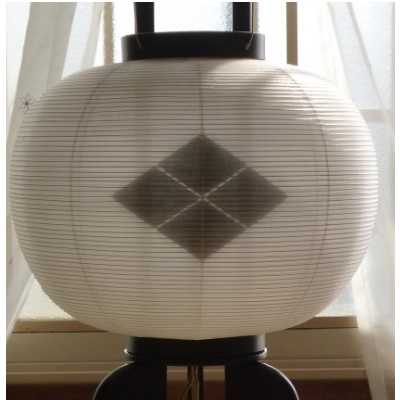
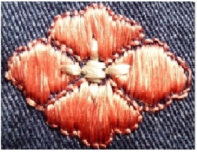
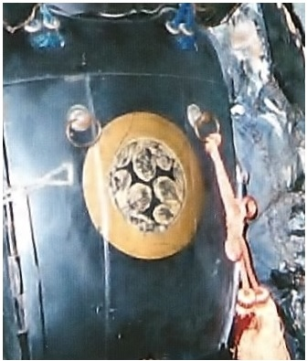
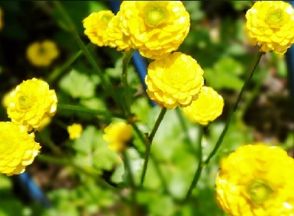
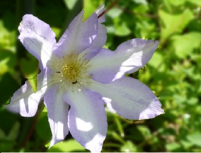

| The Survivals of the House of Takeda | |
| 武田 里沙 | |
| Risa Takeda (2015) | |
The Survivals of the House of Takeda
武田 里沙
はじめに
私の先祖である武田勝頼公は、1582年現在の山梨県甲州市にある田野の地で非業の最期を遂げた戦国武将として知られています。1467年から1573年の戦国時代、武田信玄公の四男として生まれ、数奇な運命の結果武田家の領地と諜報組織を受け継ぐ事となり、織田信長や徳川家康と戦いました。武田家の跡を継ぎ亡くなるまでの間に、武田家の領土は最大となりました。
日本では、父の信玄公があらゆる世代から親しまれている一方、勝頼公は存在自体もあまりよく知られていません。言うなれば、謎多き人物です。
本書は、母と十五年の歳月をかけ武田家全体の歴史とルーツについて調べ書き記したものです。このように長い時間をかけ調査したのには、いくつかの理由があります。一つには、祖母の遺言であり、二つには、先祖への供養のためでした。また、私自身が武田勝頼公について強く知りたいと感じていたからです。
この調査期間中に、東日本大震災が発生し私たちは惨状に言葉を無くしました。433年前、先祖と先祖を助け生き延びた武田家の家臣団たちは、被災した地域である奥州地方に落ち延びました。震災後、少しずつ日々の生活を取り戻していく中で、先祖を助けて下さった家臣団たちの末裔のある方から、次のように言われました。
「私たちのご先祖様と武田家のご先祖様の事を書いてください。私たちに残された時間はもう少ないんです。私たちは、無事でしたが多くの友人を失いました。人生は素晴らしいがひどく儚いものです。心の拠り所となるものが欲しいのです。」
このような背景で、今回本書を出版する決意をしたのです。
武田家の歴史は古く、始祖から現在まで約800年間も続いています。そのため、本書では武田勝頼公に限らず武田家全体の歴史をいくつかのキーワードに沿って概説し、併せて歴史的な文化や地域差がある宗教観などについても記載しています。本書には、英語版もあり日本の歴史や文化を簡易な表現で紹介していますので、日本を訪れる外国人の方々への説明としてお使いいただく事も可能です。
ちょうど、20代の前半から30代半ばにかけて私の人生は、先祖に対する供養の日々となりました。先祖に対する想いが強いために、切ない気持ちになった時期もありましたが、多感な時期を家族と共に調査した事が前向きに生きる良い結果をもたらしています。本書が楽しんで読まれる事を、心から願っています。
第1章 武田家の歴史によせて
第1節 武田家の歴史
第2節 口伝と家紋
第1節 武田家の歴史
武田三代として有名な、武田信虎、武田信玄、武田勝頼は、清和源氏の流れをくみ、戦国時代最強と謳われた騎馬軍団を擁し天下統一を目指した一族です。現在の山梨県と長野県、埼玉県にわたる広大な領土を統治していました。
それぞれに、有名なエピソードがありますが、よく知られているものに信玄が父の信虎を追放して甲斐、現在の山梨県の国主となった事件が挙げられます。信虎は、当時の甲斐一帯を強権でもって治めており、本来相続させる予定であった信玄を廃し、その弟である信繁を跡継ぎとして考えていたとされます。1541年、信玄は兄弟と家臣団と相談して信虎を駿河、現在の静岡県に追放しました。よく練られた革命であったため、血が流される事はありませんでした。
しかしながら、当時の日本においては親不孝の極みとされ信玄のライバルとされている上杉謙信には強く非難されたと言い伝えられています。
甲斐国主となった信玄は、治山治水事業をはじめとし諜報組織を作り領土拡大に乗り出しました。上杉謙信と川中島の戦いを数度と繰り返し、映画の題材にもなっています。また、少年法の先駆けである条文のはいった甲州法度之次第という法律を兄弟の信繁とともに定めたのも特筆すべき事でしょう。
この法律には、権力者である信玄自身もこの法律を守らなくてはならない旨の文言があります。憲法とは、国家の三要素の一つであり、権力者を縛り国家を規定する最高法規ですが、この文言によって憲法の権力者を規制するという概念の萌芽が見られる点において、大変画期的な分国法だと考えられています。
勝頼は、信玄の四男として1546年に誕生しました。母は、諏訪御寮人で信玄が征服した諏訪氏の姫君です。諏訪氏は、代々長野県にある諏訪大社の大祝、つまり神官を輩出していた一族でした。信玄と諏訪御寮人の婚姻により信玄は、信濃、現在の長野県という広大な領土と諏訪大社を信仰する家臣団を手に入れるようになりました。
武田家の歴史書の一つに「甲陽軍鑑」がありますが、この婚姻が武田勝頼の将来に暗い影を落としたというかのように、勝頼に関する多くの記述が批判的なものとなっています。この「甲陽軍鑑」については、事実とは異なる記述が散見され、記載された時代背景から勝頼の人望をできるかぎり削いでいくような意図があった事がうかがえるものとなっています。
信玄が、1573年長野県伊那駒場にて亡くなった後、その家督を勝頼が相続します。広大な領地経営にあわせ、度重なる川中島の戦いのために疲弊した経済状況を立て直すため租税の改革や人材教育に力を注ぎました。父の遺志を継いで天下統一を目指しますが、1575年に長篠の戦いにて織田信長、徳川家康の連合軍と戦い敗れます。その後、親戚による裏切りのため1582年に現在の山梨県甲州市田野の地にて自刃します。これを、武田氏の滅亡と呼びます。
第2節 口伝と家紋
武田家には、「戦国武将武田勝頼公と北条夫人の第三子が、武田家滅亡の折にご家臣団に守られ、ひそかに奥州へと落ち延び我が武田家の先祖となった」、「川中島合戦で命を落とした信繁公の孫、次郎と結婚するはずだった幼い姫君もともに生き残り、落ち延びた」という口伝があり、家紋の「武田菱」の由来とされてきました。
また、昭和末期までは、この口伝もひそかに伝えられ、あまり人に話すべきではないと考えられていました。
歴史という大海の中で埋もれ忘れ去られていく事柄や、「勝てば官軍、負ければ賊軍」の言葉のように勝者によって事実が少しずつゆがめられていくという事も、やはり多くあるのでしょう。しかしながら、人が生きて存在したという証は、そう簡単に消し去れるものではありません。どれほど時が過ぎようと、想いとともに脈々と受け継がれていくと私は、考えます。
先祖は、武田家滅亡の地から家臣団とともに脱出し、生き残ったがために「武田」という名字と「武田菱」という家紋を墓石に刻み子孫にのみわかる形で伝えてきたのです。
そもそも、家紋というものは、日本において発達した縁起の良い紋章です。
平安時代末期、源氏と平氏の戦いが激しさを増していく中で急速に武士の間に広まりました。源氏は清和天皇に始まる子孫がその代表格で、平氏は桓武天皇子孫とされます。天皇の子として生まれた後、朝廷を警護する役目を与えられ、武士となっていきました。
他に武士の登場には、僧兵つまり寺院を警護する職業から武士になっていく場合もありました。戦場での武勲を祈願する場合や一族の繁栄を願う意味もあり、家紋の多くは縁起の良い動植物や昆虫、自然現象などが図案化されています。これを吉祥紋とも呼びます。一族を同じくするものは、同じ家紋を付けましたが、時代が進むにつれて一族内、一門内で骨肉の争いを繰り広げるような事もあり、家紋のデザインが少しずつ変更されていき種類はどんどん増えていきました。
足利幕府は、1504年から1521年にかけて「見聞諸家紋」という家紋集をまとめています。それぞれの家紋について、由来や一族での家紋の違いなどが記載されました。
江戸時代に入ると、家紋によって一族や家を識別するシステムが本格的に整ってきました。徳川幕府に届け出た家紋が正式な家紋として定紋、表紋とよばれ、新たに一家を興す場合などには定紋に手を加えた替紋、裏紋を用いるようになります。女性の場合、生家の家柄によっては結婚時の持参品のいくつかに生家の家紋をつけて自身の生まれを明らかにするという事もありました。
つまり、家紋はその人の先祖がどのような人物であったかを教えてくれるのです。
一方日本における名字の発達は、家紋と同じく公家から武士の階級を経て広がっていきました。名字を持つ事と刀を帯びる権利を名字帯刀と呼びますが、江戸時代ごろは原則として武士のみに許されていましたが、実際にはその他の階級においても使用されていたと考えられています。家紋より起源が古く、祖先が住んでいた地名やその職業、信仰の対象が由来とされます。
武田勝頼の父方の祖先は、源義光、別名新羅三郎義光であり、源氏の武士の一人です。源氏は、9世紀の清和天皇を祖とする武士の集団である清和源氏がその代表ですが、源義光はこの清和天皇の子孫です。
源義光は、父の源頼義と兄の源義家とともに奥州藤原氏と戦いました。その後、常陸国、現在の茨城県に移り住みます。義光の次男である義清が、常陸国那珂郡武田郷、現在の茨城県ひたちなか市武田の地に住んだために「武田」と名乗り始めました。近年の茨城県の発掘調査により武田義清の住居跡がわかり、土器などが発掘されています。義清の兄である佐竹義業にゆかりの湫尾神社の隣に「武田氏館」という施設が建設され発掘された土器や当時の生活様式を展示しています。
武田義清は常陸国で武田を名乗り始めた後、一族のもめごとが原因で甲斐国、現在の山梨県に引っ越し、代々治めていくことになります。義清の孫の信義の代には、勢力を増し同じ源氏の源頼朝に援軍を送るほどに成長を遂げます。信義の五男の信光が、武田氏を継いで甲斐国守護に任じられ武田氏の基礎を築きました。
守護というのは、平安時代から鎌倉時代を通じて朝廷の警護の役目に当たる者たちの指揮をし、刑事裁判権をもって領地を治める者を補佐していました。鎌倉時代から室町時代になるにつれ、守護の権力は次第に増し領主へと変化していきます。室町時代の後期になると守護大名として強い権力を誇るようになり、戦国時代には守護大名同士で領土を巡って戦いあうようになります。武田信光が甲斐国守護になってから約300年後、武田信玄、勝頼が誕生するのです。
武田という名字を名乗る、源義光の子孫は、他に四家あり安芸国、現在の広島県に渡った一族、若狭国、現在の福井県に渡った一族、上総国、現在の千葉県に移り住んだ一族、常陸国の一族です。常陸武田氏は、源義清が甲斐国に住み始めた後、一三代後の子孫である武田七郎信久が常陸国に戻って興した一族で現在でも古流武術を伝えています。
いずれの武田家にも家紋として「武田菱」が使用されています。「武田菱」は、四つの菱形を、菱形に並べた家紋で、菱形と菱形の間隔が狭いものを指します。

ヒシ科の植物の葉が図案化されたもので吉祥紋の一つです。この家紋の由来もまた、武田家の祖先である源義光に関係しています。
いくつかのエピソードがありますが、もっとも有名なものは、「御旗」、「楯無」に関するものでしょう。
1050年、源義光の父の頼義は、奥州の安倍頼時の討伐を朝廷に命じられます。戦勝祈願のために住吉神社に詣でたところ、神託があり「御旗」、「楯無」を賜ることとなりました。「御旗」とは、朝廷の権威を示す日の丸の旗の事を指し、「楯無」とは、楯がいらないほど堅牢なつくりであったことから名づけられた鎧の名前です。「楯無」は、源氏八領の鎧の一つで、この鎧に「割菱」の紋がついていたとされます。源義光は、頼義の末子でしたが父に深く愛されたためにこの「御旗」、「楯無」を受け継ぎました。
室町時代になると、足利幕府が記録した「羽継原合戦記」には、甲斐国と若狭国の守護大名の武田氏は、武田菱を使用しているという記述がみられます。
このことから、もともとは菱形同士の間隔が広い「割菱」が家紋として使用し、時代を経ていく中で武田家特有の家紋として間隔が狭い「武田菱」を使っていった事がわかります。武田三代の頃になると、「武田菱」の家紋は、菱形の四弁を花の形に変えた「花菱」という家紋も使っていました。「楯無」の袖や裙にあった縁起の良い模様を起源としたためか武田家の甲冑だけではなく、一門の馬標旗などにも広く「武田菱」と「花菱」がつけられました。

曽祖父は、宮城県栗原市金成に生まれ、福島県に移住し祖母が生まれます。祖母は、昭和21年にまだ一歳だった母を連れて北海道へと渡りました。この祖母の口伝は、「武田勝頼と北条夫人の第三子が武田家滅亡の際に家臣団に助けられ、宮城県栗原市金成の地に落ち延びて武田家を存続させたという事と姫君もまた、生き延びたという事」でした。
このため名字と家紋を伝えられたのですが、ただ、祖父母の代ですでに滅亡後約360年以上経過していたため、どのような経緯で宮城県にまで落ち延びたのか、家臣団にはどのような人物がいたのかなど伝えられていない部分もありました。
勝頼には、男女合わせて少なくとも七名の子供がおり全員が幼児期もしくは若い時に武田家の滅亡を迎えているため、記録のほとんどはそれぞれが落ち延びた先での戒名や墓石などによるものです。このうち女性で「新典厩室」と呼ばれる女子の消息が不明とされていました。この名前は仮のものですが、「新典厩室」は、新しい典厩職の妻というほどの意味です。「典厩」というのは、武田信玄の弟、信繁の役職名で騎馬隊のトップを指します。この信繁の孫は、次郎と呼ばれておりその婚約相手の事です。
「次郎と婚約していた姫君」については、落ち延びた先と戒名などが不明とされてきたという事実と当家の口伝が一致していました。このため、当家の先祖とともに落ち延びた姫君も探すため、曽祖父が生まれた場所である宮城県栗原市金成の菩提寺を訪れる事となったのです。
第2章 金成にて
第１節 夢枕と板碑
第２節 歴史の中の金成
第1節 夢枕と板碑
平成12年4月5日早朝、母から筑波大学で学ぶ私に連絡が入りました。
「金成行きの切符を取ったよ」
いずれ、金成に行くことを話してはいたのですがあまりに突然だったので、これは何かあったのかなと、思いました。理由を尋ねてみると、昨日の明け方夢枕に先祖が立ったとのことでした。
「家紋のついたお墓が二基夢に出てきてね、黒い着物を着て梶の葉を連ねて袈裟代わりにしている女性と話したの。どうやら呼ばれている気がするから、金成に連絡を取って行く事にしたから。準備してね」と告げられました。
先祖代々、口伝とともに伝わってきた遺伝の一つに何がしかの事が起きる前に朝方の夢に霊示を受けるという事がありました。そのため、連絡を受けた時、「ああ、いつもの夢だな。来たな」と感じたのです。幼い頃から幾度となくこのような事が起きたので、
「何でこういう事が起きるの？」と祖母に尋ねたところ、
「こういうのがあったから、生き延びることが出来たのよ」と、答えてくれたものでした。
曾祖父母の菩提寺があるのは、宮城県栗原市金成です。日程を調整し、翌月の15日、筑波センターから当時は高速バスに乗り東京上野駅で下車し、東北新幹線MAXやまびこ号に乗り仙台駅に着きました。その後、またバスに乗り換え桜川駅前で下車したところ小さな駅舎しかない辺鄙な場所にたどり着き、ひどく不安になったものでした。人影もまったく無く、しばらく歩いてからルーズソックスの女子高生を見かけてほっとしたのを覚えています。
先祖が落ち延びた場所だけあって、隠れ里そのものでした。
菩提寺の名前は、薬王山龍国寺と言います。到着した当日は、身内の中でも伝承を知る最古の方である昌平氏を訪ねました。曽祖父が長男と福島県に移住した後、金成に残った妹が養子を迎え、昌平氏のご両親の代で分家として分かれ先祖の墓守をしていたということでした。曽祖父たちの移住後、戦争をはさみ長い歳月が経っていたので、今まで音信が無くなっていました。今では、血縁と呼べるものは無くなっているのですが、この時お会いし曽祖父の代について話を伺ったのです。長年の知己のように迎えて下さり、当時の話を様々聞く事が出来たのですが、やはり一世紀が過ぎているため金成に曽祖父と血縁がある人は最早いなくなっており、そのために勝頼公の子孫という伝承は確かに聞いていたが落ち延びてきた際の経緯や人物たちの名前などは定かではないという事でした。
翌16日、薬王山龍国寺へと向かいました。「金成町史」によると龍国寺は古くは天台宗の寺院で、文禄3年（1594年）に岩手県一関市の西光寺の末寺として中興したとされますが、正確な開基はなお不明ということでした。というのも、龍国寺本堂の西側に建久年間（1190年から1198年）に建立された奥州藤原氏の栄華を示す薬師堂があり、室町期の作と考えられる薬師如来坐像が安置されているからです。
薬師如来とは、正式には薬師瑠璃光如来と言い瑠璃色の光を背にして現れると言われています。別名は、薬王もしくは医王であり、右手に法印を結び左手に薬壺を乗せた姿とされます。寛永元年（1624年）に、曹洞宗の寺として中興されました。
龍国寺に赴き、今回祖母の遺言で先祖の事を調べ、供養を行いたいのでこちらにご連絡した次第であるとご住職に伝えました。すると、龍国寺の境内にある火伏の神様を祀った秋葉山の御堂を建て替えるために、武田家の旧墓所を削ったところ二基の板碑が出土したところでした。
ちょうど二日前の事でした。板碑とは、日本の古い墓石の事で自然石に戒名や没年月日を刻んだものです。武田家の旧墓所は、本堂正面に向かって右奥の木々が生い茂っている場所でした。
二基の板碑には、
「玄室妙通禅定尼 元禄九丙子五月朔日」、
「玉峰玄機信男 享保十六辛亥八月二十二日」
とあり、龍国寺の大過去帳から戒名を調べていただくと確かに記載がありました。出土した板碑を目の前にして「霊示の通りに不思議なことが起こった」と考えていました。
母は傍らで、「今更ながら、名家武田の血筋の凄まじさを感じたわ。驚いた」と、つぶやきました。
この二基の板碑は、勝頼公の子孫の墓であると考えられるのでこれはしっかり記録しなければと、母が崖となっていた茂みへと写真を撮りに降りて行きました。危うく転がり落ちそうになりながら、夢中になって板碑をなでている母の姿を見つめていました。
それから遠い親戚の武田家の新墓所にお参りに行くと、新しい墓石の後ろに古い武田家の墓石がいくつか残存しているのがわかりました。風化していましたが家紋の武田菱や、日紋、戒名などが刻まれていました。
お参りをすませ、龍国寺の庫裏にてご住職に話を伺うと武田家の旧墓所を改葬したが、この二基の板碑に引き取り手が無いため二,三日中に砕いて処分する予定だと告げられました。
「ダメよ」
と、母が即座に言いました。間一髪でした。母は、口伝の事と祖母の遺言を果たすために赴いた旨を説明しました。
「この板碑は、年号から見て勝頼公の孫かもしくはひ孫に当たる方のものでしょう。先祖の方々の供養をするつもりでこちらに伺ったのですから、中途半端な事はいたしません。ですから、この二基の板碑は、処分しないで龍国寺様で保管して下さいますか」
と、母が申し出ました。
当時の訪問に際しては、事前に親戚を通して連絡を入れて置いたのですが、やはり曾祖父たちの代から長く時が経っていたため、ご住職の口は重く交渉は難航しました。曽祖父たちが福島県に移住後、武田家の旧墓所を守ってくださっていた方々とは、もはや血縁関係は無くなり、また高齢であったため板碑は処分する方針となっていたのです。加えて、ただ供養したいと言っても初対面の方々であるし、口伝については若いご住職は聞いた事が無いということでした。この時初めて交渉ごとの難しさを感じました。
内容が、先祖の供養という繊細な事柄であったから尚の事だったのでしょう。住んでいる環境の違いを始めとして世代間のギャップもあり、日本特有の「ウチ」と「ソト」という概念の壁が横たわっていました。本来身内として迎えられる場所であっても、時の流れによって外に押し出されていた状況でした。まだ、大学生になったばかりで世間というものを知らない当時の私には、どうすることもできなく役立たずの自分にジレンマを感じていました。
人生の重みをかけて、武田家の先祖を調べることは亡くなった祖母の遺言であり、現在の自分たちのためだけではなく先祖に対する真摯な供養の気持ちがこもったものなのだと訴え、新たに信頼関係を築いていく母の姿を、隣に座り一言一句聞き漏らすまいとしていました。
「今度、さらに詳しく調べてきますので、龍国寺様の方で二基の板碑を保護してください」
と、母が申し、ご住職も約束して下さいました。二時間三十分に及ぶ話し合いの結果、11月に再度金成を訪れるまでの間に武田家の過去帳を調べていただくことを了承してもらったのです。
第2節 歴史の中の金成
菩提寺があるのは、宮城県北部に位置する宮城県栗原市金成です。栗原市は市町村合併以前には栗原郡と呼ばれており、名峰栗駒山から広がる豊かな自然がこの地域を穀倉、放牧地帯としています。現在では、過疎の傾向にあります。
栗原郡という名称のいわれは、「續日本記」に記されており約1200年の歴史を伝える場所とされます。神護景雲元年（767年）頃すでに交通の要所となっており、奈良時代から平安時代まで幾度か朝廷と反朝廷の戦禍に見舞われ、源頼義が奥州藤原氏を滅亡させた後も鎌倉、室町期を通して江戸時代にいたるまで長く戦場となりました。
古くは福島県以北を指す奥州と、源氏のつながりが深いのは、嘉保元年（1094年）に岩手県平泉に居を構え約100年間権勢を誇った奥州藤原氏の成立と滅亡に源氏の武将が数多く関わっているためでしょう。武田氏の祖先である源頼義（鎮守府将軍、陸奥守）、源義光親子、源義光の兄である源義家（八幡太郎義家）はその成立時期に影響を及ぼし、源義家の子孫である源頼朝、義経兄弟はその衰退の時期に関わりました。
前九年の役（1051年から1062年）において、源頼義、義家親子は、現在の秋田県及び山形県の豪族であった清原氏と連合軍を作り、現在の岩手県に当たる陸奥国北部の豪族だった安倍氏一族を滅ぼします。戦争後、源頼義たちは京都に戻り、清原氏が奥州を統治する事となりました。
約12年間に渡り断続的に続いていたこの戦いが終ったのも、つかの間、1083年から1087年にかけて清原氏一族の内乱が勃発し、再び源義家が鎮圧に向かいます。これを、後三年の役と呼びます。源義家は、前九年の役の時には、安倍氏一族に属していた藤原氏と協力し、今度は清原氏と戦うことになります。
現在の秋田県雄物川沼館での戦いでは、厳しい冬を前に撤退を余儀なくされます。この窮状は、京都にいた源義光のもとにも届き、義光は援軍を決意します。当時、義光は朝廷から援軍を止められていましたが兄を助けるために官位を辞して奥州に向かいました。1087年に争乱は平定され、奥州は藤原清衡が統治することになります。
ここに、奥州藤原氏が始まります。
前九年の役、後三年の役の後、奥州を治めるようになった奥州藤原氏は、金鉱開発や名馬の育成をはじめ各地の港を海運によってつなげる事によって、北の都「平泉」を中心とした東北一帯の自治領を強固なものへと確立していきました。
宮城県栗原市金成姉歯根岸には、この源義家ゆかりの「鷹の羽清水」という名水が現在も湧き出ている場所があります。この名水には、次のような言い伝えがあります。源義家が、前九年の役の際に奥州街道を北上し金成にたどり着いたところ、日照り続きのため飲料水が乏しくなってしまいます。そこで、元服した京都の石清水八幡宮に遠く祈願したところ、霊示を受けて鷹の羽の矢を放つと矢が当たった場所から清水が湧き出したというものです。
さらに、この名水には、義家の子孫である源義経が奥州藤原氏の治める岩手県平泉に赴く際に、伴ってきた鷹の飲料水にしたという伝説も語り継がれています。
平安時代末期には、奥州藤原氏三代の秀衡の許へと平氏打倒の意図で京都を脱出した源義経が身を寄せます。この案内役は、奥州藤原氏の財政面を担っていたとされる金売り吉次です。奥州に落ち着いてから数年後、義経は兄である源頼朝の挙兵の知らせを聞き、兄を助け多くの武功を挙げます。
しかしながら、後に不仲となり再び奥州の藤原秀衡を頼る事となります。鎌倉時代、秀衡は義経を守るように跡継ぎの泰衡に言い残しますが、秀衡の死後間もなく幕府からのプレッシャーに負け、泰衡は義経を攻めます。弁慶たちは義経を守り戦いますが、義経は自害へと及ぶ事となります。その後、奥州藤原氏は、義経を討つという命令を聞いたにもかかわらず、皮肉なことに義経を庇護した件を理由に頼朝によって滅ぼされるのです。
奥州藤原氏の滅亡後、関東一円の武士団が栗原郡に移住し開墾が行われるようになりますが、1230年の全国的な大嵐による災害で飢饉と疫病が大流行し、金成を含めた栗原郡全域は農民や武士の流民化が起こり、夜盗が増加したとされます。
のどかな風景が広がる現在の栗駒市一帯は、自然豊かな場所ですが、このような穏やかな景色は江戸時代の北上川流路移動大事業によって築かれました。1596年から1614年にかけて行われたこの大事業以前は、北上川と近隣の河川の氾濫によって一帯には湿地が多く、特に金成南端の姉歯から志波姫町にかけては湖水が多数あったと言われています。
このような事情があったためか、奥州藤原氏滅亡後から戦国時代が終わるまで、この地域も分配の対象となりますが、支配権自体は流動的で記録にもほとんど残らない土地だったのです。
天正10年（1582年）3月11日、武田家滅亡後、先祖は戦火をくぐり源氏のゆかり深い栗原郡金成へと家臣団に守られ落ち延びたのです。
第3章 供養の旅
第1節 法泉寺にて
第2節 景徳院と大善寺
第3節 恵林寺にて
第1節 法泉寺にて
「血の絆は、なんて深いのだろう」と、二基の板碑をじかに見た興奮が冷めやらぬまま、翌17日早朝、くりこま高原駅から新幹線にて出発し、一路、山梨県甲府市へと向かいました。
翌日、武田氏中興の祖、武田陸奥守信武と武田勝頼の菩提寺である金剛福聚山法泉寺へと向かいました。信武が開創したこの法泉寺は、京都妙心寺末の寺院で甲府五山の一つです。
天正10年3月11日、勝頼は息子の信勝と妻の北条夫人、家臣たちとともに現在の山梨県甲州市大和村田野で自害します。勝頼の首は、3月2日に長野県高遠城ですでに殉死していた勝頼の異母弟の仁科盛信の首とともに、首実検のために織田信長の許へともたらされます。その後、勝頼と信勝、仁科盛信、3月13日に長野県の小諸城で亡くなった信豊（信繁の子、後典厩、次郎の父）の4人の首は京都に送られますが、法泉寺三世の快岳和尚と京都妙心寺住職の南化和尚の手によって奪還され、妙心寺で手厚く葬儀がいとなまれます。
6月に、織田信長が明智光秀に討たれた後ようやく、勝頼の首は法泉寺へと戻ったと言われます。7月、徳川家康が勝頼と殉難者の菩提を弔うために田野の地に建てた天童山景徳院とともに、法泉寺を勝頼の菩提寺と定めました。
早朝やや薄曇りでしたが、昼を過ぎると快晴へと変わっていきました。澄んだ青空の下、法泉寺へとなだらかな坂道を歩いていきました。
「若いころの旭川の街並みに雰囲気が似ているわ」と、母が言っていました。
法泉寺の見事な鐘楼門をくぐりぬける時に二人で、
「失礼いたします」
と、涼やかな気持ちで言ったところ、
「ビシィッ」
と向かって紋の左手上方から大きな音が鳴り響き、思わず親子で顔見合わせたのでした。
法泉寺における勝頼公の戒名は、「法泉寺殿泰山安公大居士」
北条夫人は、「陽林院殿華菴妙温大姉」
信勝公は、「良芳院殿春山道花大居士」とありました。
勝頼と北条夫人の戒名にある、「泰」と「華」を合わせた「泰華」という熟語は、中国の五岳のうちの二岳である泰山と華山を表します。いずれも、古くから尊ばれる明峰であるため、戒名にされたのでしょう。
蝉の声はすでに高く、心静かにお参りをしました。
第2節 景徳院と大善寺へ
平成12年9月18日、彼岸にて再び山梨県へ。
この時は、武田勝頼、北条夫人と信勝の眠る天童山景徳院と、甲斐武田氏の祖、安芸守信満の眠る天目山棲雲寺、信玄のいとこであり勝頼の乳母だった理慶尼の眠る柏尾山大善寺、そして信玄の菩提寺である乾徳山恵林寺をお参りする供養の旅です。
山梨県甲州市塩山に到着したのは、14時30分頃で駅から徒歩で15分程度の日本旅館に宿泊しました。通されたのが「桔梗の間」だったため、お彼岸にちなんで良かったと話していました。残暑厳しい時期にエアコンをつけたためか、その日の夜は家鳴りが激しく、
「ビシィ、ビシィ、ビシィッ」
と鳴り続けなかなか寝付けませんでした。神仏に深く帰依した先祖が多いため、科学的に説明のつかない事が起こってもあまり動じずに生活するように心がけていますが、明け方近くまで鳴り響く家鳴りに軽い不安を感じた一夜でした。
「いやいや、きっと久しぶりにクーラーをつけたから、そのせいでしょ。明日の天目山に備えて眠ろう」
と言う母の眼は、パッチリ覚めていました。
翌19日、軽く駅前まで散歩し身支度を整えていると、
「勝頼、お父さんに会いに行くから、髭をそってくれる、整えたいの」
と、私が言いました。
「何、言っているのかな。髭はないよ。お父さんは、北海道にいるよね」
と、母がそう言ったきり、じっと私の顔を見つめています。私自身も、
「うん？今、私、何て言った？」
二人でただ黙って顔を見合わせていましたが、言葉にすると何だか怖いような気持ちがするので、そのまま黙って支度をしていました。
塩山駅から出発し大和村駅で下車後、まず天目山棲雲寺へと向かいました。天目山棲雲寺は、南北朝時代の1348年に業海本浄和尚によって創建された臨済宗建長寺派の古刹で、甲斐源氏一五代の祖である安芸守信満の菩提寺です。室町前期に、関東管領を世襲した上杉禅秀の足利氏への反乱に加担し敗北、幕府に追われ木賊山で自刃した信満とご家臣の五輪塔があります。
当時は、本堂の修復工事が行われていました。急峻な崖の上に建立されているため、戦国時代には天然の要塞としての側面も有していました。起死回生の拠点として、勝頼が目指した場所です。
信満公のお墓を、ご住職のお弟子さんが掃除なさっていました。温暖な気候のためかこまかい雑草が毎日生えるのだそうです。草取りを少しお手伝いして、信満公のお墓に手を合わせてきました。
棲雲寺には、宝物館があり管理をされているご婦人に特別に開いて見せていただきました。開山の業海禅師坐像を始めとし、武田家の遺品の数々を拝見しました。なかでも信玄愛用の軍扇については、平成11年の秋に関東からのツアーで影武者の子孫という方がいらして、
「我が家にも一本ありますが、やはりここに本物があったのですね」
と話していかれたと説明を受けました。信玄がよく手にしている姿で目にする日紋が描かれた軍配は、鉄の扇の事で軍扇と呼ぶのが正式なのだと教えていただきました。
こうして棲雲寺の軍扇を目にしたことで、金成の武田家墓所にあった日紋を思い起こし武田家における日紋の重要性にあらためて気づかされました。家紋である武田菱や花菱の他に、「御旗」にちなんで武田家では日紋も数多く使用されています。信玄の菩提寺である乾徳山恵林寺所蔵の軍扇をはじめ、信繁の馬標旗など軍事的な意味合いの強い持ち物につけられていました。
信繁は、信玄の影武者をしていたため永禄4年（1561年）の第四次川中島合戦で身代わりとなり命を落とします。信玄と信繁は、兄弟仲が非常に良くそのためか二人の息子であった、勝頼と信豊も大変仲が良かったとされています。翌年、勝頼は正式に諏訪家を相続しましたが、これは信繁の家臣には諏訪出身の武士が多く、人心を安定させるために母方の祖父が諏訪家の諏訪頼重であった勝頼を、諏訪家の当主として据えたのです。
川中島合戦の際、敵軍に持ち去られた信繁の首は、奪還され鶴巣寺の境内に埋葬されます。文武両道に優れ、家臣からの信任の篤かった信繁の死後、菩提を弔うために真田信之によって1622年、長野県長野市篠ノ井に典厩寺が建立されました。
真田家は、武田家に仕えた一族で武田家滅亡後、豊臣氏と徳川氏にそれぞれ一族を分けて仕えました。その後、徳川氏に付いた真田信之が生き残り信州松代藩の初代藩主となったのです。
管理をされているご婦人は、
「前日まで雨降りで、ここは古い木造建築だから湿気が入るので宝物館を開ける事が出来なかったのですよ。本日は、雲一つない晴れになってとても運がよろしいですね」
と、仰いました。
棲雲寺を辞し、急な山道を下って、土屋惣蔵の片手千人切りの碑にお参りをしてきました。土屋惣蔵昌恒は、勝頼の側近の一人で勇猛な武将として知られています。武田家滅亡の際に、勝頼たちの自害の時間を稼ぐために崖で一人陣を取り、相次ぐ敵を倒して亡くなったとされます。
この地に流れる日川は、惣蔵によって倒された連合軍の兵士の血で三日間赤く染まったという言い伝えがあり、そのため三日血川とも呼ばれています。
いよいよ、勝頼公の菩提寺である天童山景徳院へと向かいました。天童山景徳院の開山は、武田勝頼主従の追悼を行うため徳川家康が行いました。もとは、寺院にとっての主要な建物である七堂伽藍を備えていましたが、江戸時代の不審火によって、当時の建築物は山門のみとなっています。
景徳院は、武田勝頼公一行が命を落とした場所に建てられました。木々に囲まれ、目の前を日川が流れています。山門の登り口前に立つとそれまで聞こえていた鳥のさえずりや虫の鳴き声がやみ、あたりは静けさに包まれました。
体中がおののきで満たされ、この場所で先祖と多くのご家臣団が亡くなったのかと思うと威圧感に震えが走りました。腰をぐっと踏ん張り、腹に力を蓄え、
「さあ、入るよ。大丈夫だね」
と、心の奥を見据える母にうなずき、急こう配の坂道を登り始めました。
正面の山門へは行かずに、右奥の暗い山道へと入って行きました。やや登ったところに少し平らな場所があり、小さなお墓と真新しい石碑がありました。墓前がドングリや落ち葉によって散らかっていたので掃除をしてから持参していた金成の板碑に刻まれていた戒名を墓前に見せ話しかけました。
さらに登って、勝頼公、北条夫人、信勝公と殉死なさった方々の五輪塔と奥にあるお墓にお参りを果たしました。白菊と可憐な黄色い菊が手向けてあり、線香に火を灯すと、突然蝉が力強く鳴きはじめました。その声が柔らかく辺りに響いていきます。
「お線香とライターを持参して来てよかったね」
「お線香は、煙の少ないのにしようか？それとも、香りの良いのにしようか」
当時、418年と気の遠くなるほどの長い年月を経て、やっと勝頼公のお墓にお参りできた事を報告し、勝頼公と北条夫人の子供である私たちの先祖と、ともに落ち延びたはずの姫の戒名を何としても見つけ出し、せめて墓前にお見せしたいと五輪塔に手を合わせていると、涙が知らず知らず流れ落ちていきました。
線香の煙がたなびき蝉の声がこだまする中で素直になって子供にかえっていく自分を感じました。
「あなたの涙は、...。勝頼さんとここに眠っている方たちは、待っていらしたのかしらね...」
「お母さん、私ね、不思議なの。ここに来るまで感じていた不安や恐ろしさが消えていくの。そしてね、たまらなく懐かしいのよ」
殉死された方々、五輪塔の真後ろのお墓にもご挨拶し、どなたのものかは、わからないがお坊様の卒塔婆が朽ち果てていたのを何とかしなければと母と話しました。勝頼公のお墓の家紋が砕けたうえに、さらに肩の部分が壊れているから、いずれはっきりしたら何とかして差し上げよう、努力しようねと話し合いました。
線香を手向け手を合わせて落ち着いた頃、母が私の方を振り向くといきなり吹き出して、
「何しているのー」
と、笑い出しました。どうやら無意識のうちに服をめくってお腹を出してかゆいとポリポリかいていたらしいのです。
「こんな子供でいいのですか？」
と、母は勝頼公の眠るお墓に尋ねていました。
ほどなくして、本堂の前に行くとお地蔵様があり、由来を見ると勝頼と北条夫人の子供で幼児の時に家臣と落ち延びたが夭折し鎮目村に葬られたという周哲大童子の遺骨が分骨され祀られているということでした。
母が、夢に
「ピンクの芍薬の花の下に埋まっている子供の夢を見てね...。近づくとたくさんの花火が打ちあがっていたのよ」
と事前に話していたのですが、この場所で由来を見ると落ち延びたためにお墓を建てられず芍薬の花を墓標にしたと知り驚き、二人で静かに手を合わせました。
この時は、まだ落ち延びた私たちの先祖について詳しくわかってはいなかったため、ご住職を訪ねずに帰ろうと、また来年のお彼岸にねと別れを告げ景徳院を後にしました。
車で国道二十号線を下り、その崖下に旧甲府街道を眺め、日本一のぶどうの里という勝沼町へと入りました。青い山々がぶどう畑を囲んでいます。19日、最後の目的地である柏尾山大善寺へと到着したのは、14時過ぎの事でした。
柏尾山大善寺は、行基により養老2年（718年）に創建されました。歴代天皇家の勅願所で真言宗智山派の古刹です。大善寺は、信玄の叔父である勝沼五郎信友の娘、松葉が後に理慶尼となった時に庵を結んで住んだ場所です。信玄によって実家の勝沼氏を滅ぼされた後、松葉は離縁し仏門に入りました。
その後、松葉には子供がいたため勝頼の乳母となりました。武田家滅亡の際に勝頼一行は、天目山棲雲寺を拠点として山梨県大月市にあった岩殿城での再興を考えていたため、この勝沼町の大善寺で戦勝祈願を行い一泊したと伝えられています。
このため、理慶尼は、田野での悲劇を記録として残しました。それが、「理慶尼記」です。大善寺に保管されているというので拝見したいと胸に秘め訪ねましたが、この時は名乗る準備ができていなかったのでお参りだけにしようと本堂へと続く石造りの階段を登って行きました。
白い彼岸花が咲いており、ちょうど本堂にいらっしゃったご住職にお尋ねすると、
「檀家さんから京都のお土産として5本ほどいただいたので植えたんですよ。関東は赤い彼岸花ですが、西は白いのも咲くようで。とてもきれいに大きく咲きます」
ご住職から大善寺の建築様式の説明を伺っていますと、蝉が本堂の中に入ってきて梁にとまり大きな声で鳴きはじめました。目線だけそっと動かし、
「どうしてこうも、行く先々でいつも蝉がやってきて鳴くのかしら」
と親子二人同じように思っていました。
ご住職のお計らいで本堂内陣の薬師如来像、脇仏の日光菩薩像、月光菩薩像、眷属の十二神将像を間近で拝見させていただきました。胸にしみじみと安らぎを覚え、ため息が出るばかりでした。
薬師如来は、脇仏に日光、月光両菩薩を従えて現れるとされ、そのために薬師三尊とも呼ばれています。生きることから生じる苦しみや憂い、多くの病から人を救い穏やかに暮らせるよう十二の誓いを立てられた御仏です。薬師如来を守る十二神将がその誓いを表しているとされます。
大善寺の薬師如来像は、左手に法印を結び右手に薬壺のかわりにぶどうをのせていらっしゃいます。脇仏の日光菩薩像、月光菩薩像ともに慈愛に満ちた表情され、十二神将像はいずれも勇壮で迫力に満ちていました。その後、古文書も拝見し、ご住職に丁寧な説明をいただきました。
旅館に戻るころには、へとへとに疲れていました。頭と背中がずっしり重く、背骨には鉄の杭が入ったようで、心の臓も参ったとはあの時の事でした。宿の方には、食事に気を使っていただいたというのにまったく箸が進まず、申し訳ない思いをしました。
先祖がどんな思いで命を絶ったのか、自害したその地を目の当たりにして哀しみに打ちのめされ、疲れすぎてかえって目が冴えて眠れず天井を見つめるばかりでした。
母は後日、その時の私の姿を見て
「先祖の方は、与えられない器ならつぶれることをご存知でしょう。無事に、このまま、あなたの体に何も起きない事を願っていたのよ」
と、言いました。
第3節 恵林寺にて
翌20日、塩山市の臨済宗妙心寺派、乾徳山恵林寺へと向かいました。武田信玄公の菩提寺です。
恵林寺は、鎌倉時代末期の武将である二階堂氏が名僧であった夢想国師に帰依し、元徳2年（1330年）に邸宅を禅院にして夢想国師を招いたことが始まりとされます。
恵林寺には、特別名勝史跡に指定された美しい池泉回遊式の庭園があります。これは、廊下や園路を巡りながら池や橋、日本灯篭などを見ることが出来るスタイルの日本庭園です。様々な角度から庭園を鑑賞できるところに、趣があるのです。
ウグイス張りの廊下を渡り、不動尊像の安置されている霊殿へと入り信玄の遺髪が塗り込められているという不動尊像に手を合わせました。京都の仏師であった康清が信玄自身をモデルにして作ったのが、この不動尊坐像です。
不動尊は、不動明王とも呼ばれ大日如来が正しい道へ導きがたい衆生を救うために憤怒の様相で現れたとされ、背中に火炎を背負い右手に降魔の剣、左手に羂索という五色のワイヤーロープをもっている荒々しいお姿の御仏です。
恵林寺の不動尊像の台座には、花菱紋が配されており荘厳さを醸し出していました。
霊殿を出て廊下を進み信玄公のお墓にお参りをしました。そのまま先へは進まずに、縁台にちょこんと腰掛け、信玄公のお墓にあれこれ話しかけておりました。
「こんな遠い山梨から、どうやってご先祖様は落ち延びたのかしらね。私たちが、今でもこんなに遠い山梨までお参りに来ているのは、どんな因果があるのでしょうかね」
「勝頼公が亡くなって418年も経つのに、武田家は業が深いのね...」
そうしてしばらく蝉の声が静寂に響き渡っていくのを聞いていると、母はすっくと立ち上がって、
「このままでは、帰れないわ」
と言って再び霊殿へと戻りました。不動尊像への前へと座し手を合わせ、
「やっと、勝頼公自害から418年経ってここまで辿りつくことができました。どうか、お父さんとして真の導きをしてください」
と、話しかけていました。
当時、宝物展が開催されていたので入館し、快川国師の袈裟の一部を拝見してきました。恵林寺は、天正10年（1582年）3月、勝頼に対する将軍足利義昭の密命を帯びた佐々木承禎をかくまった件によって織田信長に焼打ちにあいました。
この時、快川国師は、唐の杜筍鶴の「夏日題悟空上人院（夏の日悟空上人の院に題す）」という詩にある句を唱え、従容として死に就いたとされています。
「安禪不必須山水、滅却心頭火自涼」
「安禅は必ずしも山水を須いず、心頭滅却すれば火も自ずから涼し（座禅に専念するのに美しい渓谷や静寂な山中に住む必要はない。心を澄ませ恐れを感じる心の動きを無にしてしまえば、燃えさかる炎の苦しみさえも超越できる）」というような意味です。
供養というのは、亡くなった家族や先祖に捧げるものですが、生きている人が亡くなった方々のために心を尽くすことで死者の幸福が図れるとされています。先祖の墓前を訪れ苦難の歴史に触れ、重い武田家の業を少しでも軽くして差し上げたいという想いが胸に迫った旅でした。
英語版の文章を少し載せています。
In Buddhism, we believe when we pray for the dead or keep on doing good deeds, a lotus will come out near them in Pure Land. Throughout this trip, I was impressed by great hardship which our ancestors endured and I felt that I'd like to give them a lot of lotus.
（仏教では、遺族や子孫が亡くなった方の供養をしたり善行を積むと、蓮の花が浄土に咲くと考えられています。この旅を通じて先祖の困難を目のあたりにし多くの花々を咲かせて差し上げたいと思ったのです。）
第4章 埋め隠されていた墓石群
第1節 無縁塚
第1節 無縁塚
平成12年11月14日午前、金成町の龍国寺へ武田家の先祖の戒名を大過去帳から調べていただくという件で再び訪れました。寺院には檀家全ての戒名が書かれた大過去帳という、記録があります。
この中から、自分の家の分を取り分けて教えていただくには、プライバシーに配慮するためしばらく時間を置かなければなりません。そのため、前回5月に来た折に11月に再び訪問することを約束したのでした。今回の話し合いは穏やかに進み、挨拶を交わして間もなく、5月に出土した板碑を保管して下さった墓所へと案内されました。
本堂の入口付近から坂道を少し下がっていくと、高さ2メートルを超える百数十基のピラミッド型の無縁塚がありました。あまりの大きさに、私は「ああ、どうしよう」と思い、母の顔を見て、もう一度無縁塚を振り向くと朝日に照らされて墓石群から日紋や卍紋、ゆかりがあるような戒名が浮かび上がって見えたのです。
「ああっー」
と悲鳴にも似た声が二人同時に発せられました。
日紋というのは、山梨県の天目山棲雲寺で拝見した軍扇や馬標旗に用いられていた紋です。武田信玄の弟である武田信繁は、典厩衆という騎馬隊を率いており、この馬標旗に用いられたのが日紋でした。これは、武田家家宝の御旗に由来し、武田菱、花菱とともに用いていた事を無縁塚の前で瞬時に思い出したのです。
母は、これは先祖を助け逃してくださった方々の墓ではないかと察しました。生前、祖父が
「証拠の品々は、身の安全を図り家臣の方々に預けているから、いずれきちんとしなければならない...。印鑑や刀、お椀とな...」
と、述べていたそうです。
きっと、この墓石群はそういった方々のものではないかと考え、この無縁塚について伺いました。
この無縁塚については、この時だけではなく、この後何度も尋ねる事になるのですが、うかがった話と昭和31年の資料を見せていただいたことを総合すると次のようになります。龍国寺の21世ご住職が、武田家の旧墓所や龍国寺の境内に倒れていた数十基の無縁仏を1か所に集めて祀っていたところ、昭和31年になって旧本堂が建っていた前面の土地に新たに無縁塚を建立する事になり、境内を掘ったそうです。
すると、土の中から長方形の墓石群が立ったまま、ずらりと出土したそうです。そこで、この墓石群を土から出して前述の墓石群と一緒に無縁塚として祀ったということでした。
その後、平成元年10月15日、本堂の改修工事が終了し昭和31年に建立した無縁塚が本堂手前に寄り過ぎてしまったため、現在の参道を登り切った場所に移すことになりました。そのため、当時の無縁塚の下を深く掘ると基礎の下にまた墓石が現れたそうです。この時は、横たわった墓石のさらに下に板碑が埋まった形で30数基出土したということでした。中央に板碑を配し、周りを長方形の墓石で囲むようにして整然と埋められていたため、板碑を守っているように見えたそうです。
出土した昭和31年と平成元年には、この墓石群が何を意味するのか誰にもわからなかったので、ピラミッド型の無縁塚にして祀っていたということでした。
平成12年5月に武田家の旧墓所から出土した二基の板碑は、無縁塚の西側上方に安置されました。
戦後二度にわたって出土した墓石群が埋まっていた場所は、龍国寺の墓地ではなく、奥州藤原時代に建立された薬師堂と旧本堂の間と境内です。昭和31年当時その場所に墓が埋められていたことは、当時のご住職を始め檀家さんもご存じではなかった事と、埋められていた墓石群の没年より墓が埋められたのは、少なくとも江戸時代だったと考えられます。現代のように墓地不足が深刻な時代ではないので何らかの意図があって埋められたのです。
誰が、何のために埋めたのでしょうか。
その答えの一つは、意外な形で私たちの前に現れました。
この時の訪問の目的は、武田家の先祖の方々を龍国寺の大過去帳から調べていただく事でした。今回の調査で武田家の先祖のうち「武田子之助」という人物が龍国寺の第5世の住職であることが分かったのです。
戒名は、「丹洲玄瀛大和尚禅師」です。
この方は、明和8年（1771）に亡くなられています。13年後の天明4年から慶応2年（1866年）の83年間は龍国寺の住職の入れ替わりが頻繁だったことから、それを見越した第5世住職が無くなる以前に何らかの事情で埋め隠したのではないかと、当時考えました。
宮城県の隣県である山形県には、埋経という経を掘りつけた石や経文を筒に入れて土の中に埋めて保存する風習があります。古くは、経典そのものの保存が目的とされていましたが、時代が下るにつれて現世利益や一族繁栄を願って行われるように変化を遂げていきました。
ただ隠すといった意図の他にこのような考えがあったのかもしれないと思いました。
今から約250年も前に、いったい何を守ろうとしてこの墓石群を埋め隠したのでしょうか。墓石群の前に立って、母は無言で私を見つめました。気持ちを推し量っていたのです。
「この件は、きちんとするしかないね。とても大変な事だと思うけれど、武田家の持った歴史がドラマティックだから、これはやるしかないね。今の平等な時代でなければ出来ないよ。ずっと、待っていたんだと思う。絶対に探そう。落ち延びた方々の事を」
と、二人で話し合ったのです。義を見てせざるは勇なきなりという心境でした。
無縁塚を見るたび、先祖の知恵は計り知れないと思います。こうして埋め隠されていたため風にさらされることなく現存しているのだと感じました。
薬王山龍国寺の開基は、いまだ不明のままで文禄3年（1594年）に中興されましたが過去帳などの記録はなく、曹洞宗となった寛永元年（1624年）からの大過去帳が残存しているだけだとされます。
このため、田野の地で武田氏が滅亡した天正10年（1582年）から薬王山龍国寺の記録がある寛永元年（1624年）までの空白の42年間を埋める手がかりを見つける事になりました。
第5章 どうやって生き残ったのか
第1節 7名の陸奥守と諏訪神社
第2節 武田家滅亡後の惨状
第1節 7名の陸奥守と諏訪神社
どのようにして、無事に生き延びたのか。先祖を探す鍵は、この命題を解く事にありました。
現実的に考えて、戦時の山梨県を脱出して、宮城県の金成まで落ち延びるということは大人であっても難しいでしょう。まして幼かったはずの先祖だけでは、無理です。口伝の通りに、協力者がいたとしても落ち延びる先の安全もある程度確保していたのではないかと思い、まず武田家の中で、奥州に詳しい人物や、つながりを持つ人物がいないかを中心的に調べはじめました。
すると資料を調べていくうちに、甲斐武田氏の先祖に7名もの陸奥国守護がいた事がわかりました。金剛福聚山法泉寺の開山者である武田信武とその子どもである信成、孫の信春、曾孫の信満と信元で５名になります。また、信玄の祖父の信縄、父の信虎も陸奥国守護でした。
守護という職種は、鎌倉時代から室町時代に各領地における裁判権などを有し領主の補佐を行う役職でしたが、次第に権力を握るようになって領主化し、守護大名になっていきます。その代表例が、甲斐における武田家です。
一方、当時の守護職は、任命されたからといって必ずしも任国に渡ったわけではなく、守護代という代理人や国人に管理者を置いて管理させていました。ただ、これほど多くの陸奥国守護がいるということは、将来の領地拡大に向けて情報を手に入れるため独自の調査を行っていたと考えられます。
信玄には、独自の諜報組織があり各地の地理、風習、人間関係などあらゆる事を調べさせていました。
また、金成付近の歴史を調べている中で、天正６年（1578年）、奥州の行政を取り仕切っていた奥州探題大崎家の家臣に菅原氏という一族がいて、金成の隣の若柳町有賀という場所に諏訪神社を勧請していることがわかりました。勧請というのは、新しく寺社仏閣を建立する際に神仏を分霊していただきまつる事です。勝頼の母方の祖父は、諏訪上社の大祝の末裔である諏訪頼重です。
もともと、勝頼は、諏訪氏を継ぎ諏訪四郎神勝頼と名乗り、諏訪大社の保護に努めました。
これらのことから、武田家が当時の奥州一帯の情報をある程度まで入手しており、かつ勝頼自体が金成付近の状況も把握していたことがわかりました。
つまり、先祖が落ち延びる際の安全な受け皿が存在していたことがわかったのです。
このような手がかりを携えて、武田家が滅亡した天正10年（1582年）から薬王山龍国寺が寛永2年（1624年）に曹洞宗の寺院となるまでの42年間の空白期間を埋めるべく、平成13年4月15日、再び金成を訪れました。
前日まで雨が降っていたものの、当日は爽やかな天気に恵まれました。くりこま高原駅から沢辺町を通り、迫川の土手をレンタカーで走りました。桜のトンネルでした。この時の旅が祝福されているかのように幕開けしたのを今でも覚えています。龍国寺に到着し、参道を登りきるとここでも桜が満開でした。
ふと振り向くと、父が桜の枝を手繰り寄せ花の香りを楽しんでいました。龍国寺に訪れたのは、お参りだけでなく、ご住職に手伝っていただいて金成付近の関連がありそうな史跡の管理をされている方や仏閣のご住職に紹介していただく事になっていたのです。
しかし、残念なことにこの時訪れた場所はいずれも関連がないかもしくは、記録が火災によって焼失していた事がわかりました。
7名の陸奥守と勧請された諏訪神社によって、奥州と武田家のつながりが確かなものだと考えていた分よけいにショックが大きかったのです。もうこれ以上、いくら調査を進めても無駄なのではないか、祖母との約束を果たせず、誰がどのように落ち延びたのかもわからず終わりになってしまうのかと思いました。
「どうしよう。どうしても落ち延びた方々を探さなければならないのよ。そうでなければ、勝頼公と北条夫人がかわいそう。ああ、42年の空白をどうやって調べよう」
と母が言い、同行されていたご住職に奥州と武田家の関連性について説明しました。するとご住職が、
「法師法孫の関係で、何らかのつながりが見つけられるかもしれません。調べてみましょう」
「お任せします。お坊様のことを調べるのは難しいのです。時間がかかっても結構ですのでお願いします」
と話し、資料を預け金成を後にしました。
第2節 武田家滅亡後の惨状
翌日、茨城県ひたちなか市を訪ねました。茨城県は、もともと武田家発祥の地であったので、武田家の歴史を知る方に武田家滅亡後のお話を聞きに伺ったのです。源義光と源義家との絆や佐竹氏などについてお話を伺いました。
「武田氏は、長男ではなくて次男や三男が跡を継いだ時に大転換を起こしていますよ。それは、武田氏の始祖が新羅三郎義光公で源頼義公の三男だったからなんでしょう。発祥の地を実際に見て、歩いてルーツを調べるということは大切な事なんです」
「当時は、武田狩りといって武田家の一族や旧臣に追手がかけられていたんですよ。見つかれば、それこそ女、子供とて容赦なしになで斬りにされたというから、西には逃げられなかったんでしょう。北に逃げるより他無かったんです」
と説明して下さりながら、茨城県にある武田家ゆかりの地を案内していただきました。
武田狩りのお話を伺いながら、私は武川衆の事を思い出していました。武田家が滅亡した後、織田信長の家臣であった河尻秀隆によって甲斐の支配が行われました。しかし、それは統治とは呼べず略奪と虐殺であったとされ、治安は一気に悪化しました。
この河尻氏を倒したのが、勝頼の直属の配下であった武川衆です。武川衆は白兵戦を得意とする武闘派の集団で河尻氏を倒した後、徳川家康が勝頼の菩提を弔い甲斐を治めるまでの一定期間、甲斐を保護していたのです。
400年以上も前の事を口伝と家紋を頼りに探すのは、無謀なのだろうかと悩んでいましたが、武田狩りや河尻氏の騒乱などの危険をかいくぐって生き延びた先祖とご家臣団の事を思うとあきらめるという選択肢はありませんでした。
人事を尽くしたのでこれからしばらくの間、我慢して吉報を待ったのです。
第6章 吉報
第1節 見つかった手がかり
第2節 姫君の行方

第1節 見つかった手がかり
平成13年8月、金成からの電話で法師法孫の関係から、落ち延びた先祖の事がわかりそうだという連絡が入りました。ご住職が、法師法孫の関係で龍国寺とつながりのあるお寺に天正18年（1590年）の大火によって、金成のある寺院から移動した人々がいるということを調べて下さったのです。
平成13年9月10日、台風16号が日本へ上陸しているなか金成へと赴きました。薬王山龍国寺に行き、さっそく本題に入りました。
ご住職によると、天正18年（1590年）に宮城県登米郡中田町石森にある安永寺というお寺の前身の薬王山秀山寺に金成の寺院から移った人々がいるということでした。薬王山秀山寺は、詳細不明の二木三五郎という人物が単立したお寺とされていました。
単立とは、特定の宗派に属さず基本の教義に立ち戻って、独立した運営を行うという意味です。この薬王山秀山寺は、一度単立した後、真言宗の寺院となり、最後に宗派と寺院名が変更され曹洞宗の安永寺となったとの事でした。また、法師法孫の関係で龍国寺とつながりがあるということでした。
ご住職からお話をお聞きして、寺院を単立させた二木三五郎という人物が詳細不明の人物であること、薬王山秀山寺の山名が武田家の墓所があるこの薬王山龍国寺と同じ点、単立後に真言宗になったのにもかかわらず山名が薬王山である点など、じかにもっと詳しくお話を伺いたいと翌日安永寺をお尋ねすることになりました。
明日の予定を立てた後、金成の史跡をご案内していただきました。
龍国寺から車で約4分の場所にある福応山常福寺を訪れました。常福寺は、奥州藤原氏の藤原秀衡と、奥州一の豪商として名を挙げた金売り吉次とその妻が眠る寺院です。福応山常福寺の開創は、仁安年間（1166年から1168年）頃に金売り三兄弟が父母の炭焼き籐太夫妻を偲び建立したとされます。
金売り吉次は、奥州藤原時代に活躍した人物で金を採掘して財を成した一方、奥州藤原氏の財政面をバックアップしました。吉次は、京都の鞍馬寺に参詣した際に後の源義経となる牛若丸と出会います。平氏との戦いに備えて兵力を蓄えたかった牛若丸は、吉次から奥州藤原氏の豊かさや、牛若丸の先祖であった源頼義、義家の関わった前九年の役について聞き、奥州を訪れる決心をしたとされています。
金成には、平泉に赴く途中の義経を泊めたとされる吉次の居館、東館があります。福応山常福寺は、一度火災に遭って廃寺となりますが村人の協力で再建されました。
常福寺に降り立つと、またもや不思議な事が起こりました。
母が以前見た夢で、長く続く階段を登りあるお寺を訪ねていきます。母はその時、夢の中で信玄公と勝頼公のお墓を探して、お寺の左奥の小道を上がって行くのだそうです。けれど見つけられずに、お寺の中で狛犬の阿吽の阿の方を胸に抱いて階段を下りてきました。すると、お寺から狛犬の吽の方を抱いた女性がわざわざやってきて
「あの女性は、ずいぶん遠いところからやって来たようだからどんな用事なのか尋ねていらっしゃいと住職に言われたのです」
と聞かれたので、
「私は、信玄公と勝頼公の墓を探しているのです」
と母は答えたのだそうです。
「今、住職がいないのですぐ答えられませんが、探しておいてあげますよ」
と言ってくれたのよと話しておりました。
常福寺の階段を登りながら、
「以前見た夢のお寺を一度は他のお寺と思ったけれど...。あそこは階段ではなかったから違うと思ったけれど、...。今日ここに来たら、あの時見た夢の場所は確かにここにそっくりなのよ」
と母が説明しました。
すると、こちらの常福寺は前ご住職が亡くなられた後、ご夫人がお一人で守っておられましたがその方もお亡くなりになって、今は縁あって龍国寺のご住職がお守りしているのだと話して下さいました。そして、確かに常福寺の左奥には小道があり現在では使われていない墓所があるのだそうです。
一番驚いているのは、母でした。
本堂の左手にある金売り吉次夫妻と藤原秀衡の五輪塔にお参りをし、次に向かったのは、金売り吉次の父である炭焼き籐太の碑がある山です。
うっそうと木々が生い茂る急な山道を登って行くと板碑と炭焼き籐太の碑が、風雨をしのぐ屋根の中にひっそりとありました。板碑には戒名ではなく由来が書かれているようでした。
史跡を実際に訪れた事によって以前に武田昌平氏が話して下さった、龍国寺の山門の下を源義経が歩いていたのだと語り継がれている事が、リアルに思えてきました。古くから受け継がれてきたものの価値を知り検証を加えて後世に伝えて行く事は、実際にその立場に立つと驚くほどの重圧があります。
金売り吉次の眠る福応山常福寺に案内され、省みて気を引き締めました。
父が龍国寺から帰り際、本堂の前にある木の下で木を見上げていました。
「今、片方の羽が傷んだ蝉がさっきまで上の方で鳴いていたのに、下に降りてきたんだ。姿を見せてくれたんだなあ」
第2節 姫君の行方
翌日、前身の薬王山秀山寺の由来を伺うために、石森山安永寺へと赴きました。予報では台風16号の影響で天候が崩れやすいと出ていましたが午前中は雨一つ振りませんでした。
「遠く北海道からよくいらっしゃいました」
と、安永寺の先代ご住職、現ご住職ご夫妻に温かく迎えていただきました。
「今回、こちらの安永寺様に伺ったのは、安永寺様の前身である薬王山秀山寺についてお話をお聞きしたかったのです。ここ5年ほどかけて私のルーツを調査して参りました。亡き父母には武田信玄の四男、勝頼が天正10年（1582年）に山梨県の田野の地で滅びる際に北条夫人との第三子と、幼い姫は家臣とともに落ち延びて、当武田家の先祖となったと伝えられてまいりました。
平成12年の5月に龍国寺様の旧武田家墓所から板碑が出土いたしましたのを端緒といたしまして落ち延びた方を探しておりました。というのは、龍国寺様は寛永元年（1624年）に曹洞宗になっておられて、それ以前の過去帳がございません。400年ほど前の栗原郡には、まだ檀家制度が無かったと伺いました。おそらく移動をしていたのではないかと、他の400年以上前からあるお寺を探しておりました。
金成にあるお寺がそうかと思い伺ったのですが、記録などは大火で天正18年（1590年）に焼失しておりました。
ですが、龍国寺様に法師法孫の関係で調べていただきましたところ、こちらの石森山安永寺の前身の薬王山秀山寺がちょうどそのころ単立されていて、金成の火災に遭ったお寺から人々がこちらへ移ったようだということでお話を伺いに参りました」
と、母が話しました。
当時、石森山安永寺は庫裏の改修工事のため書類等は片づけておりどの場所に参考になるものを置いたのかはわからないが、前もって連絡をいただいていたのでこの方とお話しされればきっとお分かりになる事があるはずだからと、石森山安永寺を開基なさった方の末裔の方に連絡して過去帳や家伝を教えてもらえるように話をしておりますよと仰って、安永寺総代の笠原家のご当主を紹介して下さいました。
笠原氏が見せて下さった過去帳を受け取り、初代の方の戒名がある場所をめくった母の口から言葉にならないうなり声が発せられました。
「ううう...。あったー。この方だ。『北條』の名にして残してある」
大粒の涙をわっとこぼす母に、サッとハンカチが差し出されました。涙で過去帳が濡れないように私が受け取りますと、
「見柳院殿玉室妙眼大姉
慶長九辰年二月七日
笠原城之助隆康之奥方
北條氏之女」
と、確かにありました。
「ああ、やっとこの方を見つけることが出来ました」
過去帳の戒名を確認している間にも、握りしめられたハンカチが次第にくしゃくしゃになっていきます。「ふう」と大きく息をついて丸めたハンカチを横にほうり、母は滔々と話し始めました。
「この方を探していたのです。あと、勝頼公と北条夫人の第三子もいると思うのです。全力を尽くして探しますので、どうぞご協力ください」
と、皆様に頼みました。
「ここに『北條氏之女』とありますが『女』とは娘という意味ですが、この方のいわれをお聞きしたいのですが」
と、笠原氏にこの過去帳に記載された「北條氏」の女性について尋ねました。
「今回こちらへ伺ったのは、前身の薬王山秀山寺が金成の大火に遭ったお寺と同時期に単立されていることがわかり、また単立した二木三五郎という方が詳細不明の人物であったので由来をお聞きしようと思ったのです。
それに、薬王山秀山寺は単立されたお寺で後に真言宗となったということですが、薬王山という山号は、どうも腑に落ちないのです。山号の薬王は薬師瑠璃光如来にちなんでのものでしょう。今回ご同行いただいた龍国寺様も同じく薬王山と言いますが、こちらは、薬師如来座像が安置されているのでわかるのですが...
そこで、真言宗で薬師如来像があるというと山梨県勝沼町の柏尾山大善寺です。大善寺は勝頼公の乳母であった理慶尼さんの庵があったところですから、武田家の落ち延びた方々と何らかのつながりがあると考えたのです」
「今回、笠原様の過去帳を見せていただいたところ『笠原城之助隆康之奥方 北條氏之女』とあり、武田家の落ち延びた姫とわかりました。
過去帳に『北條氏之女』とありますが、『慶長九辰年』に亡くなっているということは、天正もしくは、それ以前の生まれでしょう。すると、北条氏のその頃の時代背景からしてこの地に嫁ぐといういわれが無いのです。どのようないわれがある方なのでしょうか」
と、母がお聞きすると、笠原氏は次のように説明してくださいました。
「私も、『北條氏之女』という方については、長らく疑問があったのです。この方については、城之助隆康がいずれの戦の地から馬に乗せて数え年5歳の女の子を守って連れてきたということ以外いわれは伝わっておりませんし、この方について語ることはやはりタブーのような感じを受けていました」
「ただ、この安永寺を開基した笠原城之助隆康という人は、秋田の方に弓矢の術を学びに行き武功をたてたので武将として伊達政宗に取り立てられたといわれています。また、笠原城之助隆康は、木曽義仲の子孫と言われておりますが、『北條氏之女』という方と結婚し生まれた男子二人は、大坂冬の陣と夏の陣において討死しここでDNAは切れているのです。その後、他家から養子を取りその子が後の笠原家を継いで私が現在の当主です」
「笠原家の始祖である笠原城之助隆康をこれまで調べるに当たり、やはりこの『北條氏之女』という方の事については疑問があったわけなのですよ」
対談が一段落ついて笠原氏にご案内いただいて安永寺ご住職ご夫妻と龍国寺ご住職、ご母堂様、私たち家族で見柳院殿さんのお墓にお参りに向かいました。
お墓は、笠原氏の5千坪のお屋敷の奥にあります。屋敷墓といって寺院などの墓所ではなくお屋敷の敷地内に墓所を設けるタイプのお墓でした。一足ごとに時をさかのぼっていくかのような竹林を通り抜けると、広い空間に出て屋敷墓が現れました。近くに迫った台風のためか辺りは物音一つなく、竹林の爽やかな香りに包まれています。
右奥に笠原城之助隆康さんと見柳院殿さん、息子二人の家族の戒名が刻まれた板碑がありました。
「ああ、やっと見つけましたよ」
と、母が板碑に挨拶しています。見柳院殿さんの戒名をよく見ようと板碑に近づくと、
「あっ、『北条』になっている...。過去帳とはちがうよ」
そっと板碑に刻まれている「北条」の文字に触れました。
「そう、こうやって守ってきたのね」
「ここに来てやっとわかるようにしたのね」
過去帳は、自宅の他に菩提寺にも同じものがあるので、万が一にでも外部の人の目に留まるかも知れない可能性のあるところには、「北條」として残し屋敷の奥にあって家族以外の人は入ってこない屋敷墓の板碑にのみ「北条」と刻んでおいたのです。
後世へと足跡を残せるように子孫にのみわかる形で目印をつけておいたのだと思われました。母は、板碑の文字を幾度もなでています。その姿を見ていると、母が振り返って
「里沙、また起きたよ」
最初は、母が何を指して言っているのかわからなかったのですが、
「鳴いているよ。鳴いているの。景徳院の蝉と同じ鳴き方だよ」
いつの間にか、竹林は蝉時雨に包まれていました。居合わせた全員が、しんとなって竹林の空を見上げました。
「他の板碑やお墓には触れることが出来ません。ただこの板碑は、縁があるので触れます。」
歴代の笠原家のお墓の上部には、深い溝の丸が刻まれていました。一円相といい、万物の象徴である「空」という概念を表したものと説明されました。
現在、供養塔とされている五輪塔はそれぞれの部分が上から「空」、「風」、「火」、「水」、「地」で世界を構成する五元素を表すものであり、一円相はそれを「空」を表す円一つで示すものです。金成の龍国寺にある武田家の墓石群の日紋と比べると見柳院殿の眠る板碑の一円相は溝が深く太く日紋とは異なるようでした。
蝉時雨を聞きながら板碑を写真に収め竹林を後にしました。
「今でなければこの方々の事を世に出すことはできなかったでしょう。土の中で隠されてきた方々の事を想い、ここまで親子で調べてまいりました。
これも今の平等な時代になってできる事です。また、金成に参りますので寄らせていただいてお話を伺いたいのですが、どうぞご協力下さい」
と今回お時間を取って下さったお礼等を述べ笠原邸を辞しました。
途端に空から大粒の雨が。台風の中金成へと引き上げたのです。
日付を見て気づかれた方もいらっしゃるかと思いますが、見柳院殿の戒名を見つけた日、アメリカ合衆国で9.11のテロ事件が発生しました。
また、この時訪れた宮城県登米郡中田町は人口約1万7千人の緑豊かな町ですが、この地も平成23年3月11日の東日本大震災で被害を受けました。
お亡くなりになったすべての方と、大切な方を亡くしたすべての方に謹んで哀悼の意を表します。
第7章 三人の笠原氏
第1節 2種類の「梶の葉」
第2節 開山者
第3節 協力者
第1節 2種類の「梶の葉」
平成13年10月2日、笠原氏より書類が届きました。金成から戻ってきてからすぐに、母が北条夫人（桂林院殿）と武田勝頼の姫と考えられる見柳院殿について手がかりとなる品か書付などないか尋ねていたためでした。
祖父から母が聞いていたところによると、
「家臣の方がな、証拠の品を持っていてくれるからな。印鑑と刀、お椀とな...」
ということでしたので探してほしいと再三に渡って連絡していたのです。
また、天正18年の金成の大火に遭った寺から移動した方々とは別に、先に見柳院殿さんが落ち延びていたのではないかと、どんな些細な事でも良いので教えてほしいと伝えていたのです。
送付された書類によると笠原家の家紋は「梶の葉」であること、木製の不思議な紋様が入った印章が4本伝えられていたが、昭和30年代の火災によって4本とも焼失したということ、印章と同じ不思議な紋様がほどこされたお椀が残っている事、他には見当たらない旨書かれていました。
笠原家の家紋については、親戚もすべて「一つ梶」と呼んでいる梶の葉紋を用いており「仙台御系図武鑑」にも記載があります。
しかしながら、笠原城之助隆康の跡を継いだ笠原家にのみ同じ「梶の葉」紋様でも「三つ梶」と言われる家紋を伝えてきているということでした。その「三つ梶」を使用し始めたのは、笠原城之助隆康の代からで、二代目以降は血縁が無いのだけれども女性から伝わった家紋であったので代々女性用の紋として受け継がれてきたとのことでした。
家紋とは、ある人物がどのような一族、家系に属しているかを示すものです。
見柳院殿を保護した笠原城之助隆康の始祖は、木曽義仲の第十子、義景です。義景は、父の義仲が朝敵となってしまったため信濃の笠原庄、現在の長野県中野市笠原で成長し、笠原十郎義景と名乗りました。名字を木曽姓から笠原姓に変えた時、母方の家紋の「梶の葉」を継承したのでしょう。
「梶」のカテゴリーに属する家紋は、「梶の葉」が諏訪大社のご神紋であったことから諏訪大社の大祝を輩出した梶氏、金刺氏、神氏、諏訪氏などに使用された他、信濃国、甲斐国に住み諏訪大社を信仰していた人々が多く用いた家紋です。
笠原城之助隆康の始祖である木曽義仲を保護した養父と、義仲の妻は諏訪下社の祝を輩出した一族とされていることから、「梶の葉」紋のうちの「一つ梶」紋が定紋として伝わったのです。
ここで、笠原城之助隆康の代の女性から伝わる紋が「三つ梶」紋ということなので、見柳院殿が「三つ梶」紋を用いていたとわかります。石森山安永寺でご紹介いただき発見することができた見柳院殿の生まれを示す「北條氏之女」という言葉と笠原邸の屋敷墓の板碑に刻まれていた「北条氏之女」という言葉を考え合わせると、見柳院殿の両親は武田勝頼と後の正室、北条夫人（桂林院殿）に限定されます。
武田勝頼の母は、諏訪頼重と麻績御料人の娘で諏訪御料人と呼ばれています。諏訪頼重は、代々諏訪上社の大祝を輩出した諏訪氏の当主で武田信玄の信濃侵攻により天文11年（1542年）自刃します。
その後、武田信玄の弟である武田信繁が信濃国を治めますが、永禄4年（1561年）9月の川中島合戦で信玄の身代わりとなって戦死します。信繁の部下の多くが諏訪出身の武士であったことと、勝頼が諏訪頼重の孫で諏訪市の血筋であるために永禄5年（1562年）、勝頼が17歳の時に諏訪氏を継ぎます。
諏訪氏の正式な当主となった勝頼は、諏訪四郎神勝頼と名乗り高遠城（長野県高遠町）に入ります。高遠城には伊奈郡代が置かれていたので勝頼は伊奈四郎勝頼とも呼ばれました。
勝頼が継いだ諏訪氏は代々諏訪上社を信仰していた一族なので、家紋は「梶」紋のカテゴリーに入り「三ツ葉根アリ梶の葉」、別名「諏訪梶」です。その後勝頼は武田家を継いだので「武田菱」、武田菱を華やかにした「花菱」も使用することが出来ました。当時の女性を取り巻く環境及び女性用の紋の特性から考えて、見柳院殿に伝わる「三つ梶」紋は、夫である笠原城之助隆康の「一つ梶」が形式変化を遂げたものではなく、父の武田勝頼に由来するのです。
見柳院殿玉室妙眼大姉の戒名の横に刻まれていた「北条氏之女」の意味は、「北条氏の娘」ですが、「北条家の娘」を指すものではありません。
もし、北条家から直接嫁いだ姫を表す「北条家の娘」であれば「三つ梶」ではなく、北条家の家紋である「三つ鱗」が伝わることでしょう。石森山安永寺において母が説明したことは正しく戦国時代の北条家から笠原氏もしくは奥州の地に嫁いだ姫はいません。
武田勝頼は、信勝の母である先の正室を亡くしてから10年後の天正5年（1577年）に北条氏政の妹である北条夫人を正室に迎えます。
そもそも北条夫人の生家である北条氏は、戦国時代のパイオニアとして知られる北条早雲が興した一族です。
北条早雲は、もとは岡山県の伊勢氏の出身で室町幕府に仕えていましたが応仁の乱後、妹の嫁ぎ先である今川氏の内紛を治めて現在の静岡県である駿河の領地を受け、その後伊豆や、現在の神奈川県の相模を治めました。この後5代続く北条氏の礎を築いた人物です。
北条氏の家紋は、三つの三角形が山の形に並んだ「三つ鱗」紋です。つまり北条家から直接嫁ぐと、「梶の葉」ではなく「三つ鱗」が伝わることになるのです。
北条家と武田家は、同盟を結び北条夫人は武田勝頼と結婚します。武家同士の結婚は、家同士の結びつきが重要視されており当人同士の気持ちはたいてい二の次なのですが、勝頼と北条夫人の仲は大変良かったとされています。
「理慶尼記」によれば、勝頼が天目山棲雲寺を目指した背景の一つには、万一の場合年若い妻である北条夫人だけでも生家である北条家に帰してあげようと考えていたためと書かれています。ただ、勝頼のその考えを聞いた北条夫人は、生涯を夫と共にすると誓い、田野の地で自刃するのです。
祖母が話していた「川中島合戦で命を落とした信繁の孫、次郎と結婚するはずだった幼い姫」とは、見柳院殿のことでしょう。ここでの次郎とは、武田信玄の弟、信繁（古典厩）の孫を指します。
信繁の子、信豊（後典厩）には男子が少なくとも一人いたとされ、名前および職名は未詳とされていますが便宜上「次郎」、もしくは「新典厩」と呼ばれており、天正10年（1582年）に長野県の小諸城において父の信豊とともに亡くなっています。このため、信豊の子である次郎と婚約したとされる勝頼の息女は便宜上「新典厩室」と呼ばれていますが、見柳院殿のことを指しているのでしょう。
笠原家に伝わる「城之助隆康が数え年の5歳の女の子を馬に乗せて戦場から連れて帰ってきた」という言い伝えは、武田家滅亡の際に笠原城之助隆康が見柳院殿を守って落ち延びたという状況を表しています。また、この言い伝えの他は、見柳院殿について語ることをタブーとしていたという事こそが、慎重に守られていたことをうかがわせるのです。
第2節 開山者
慶長9年（1604年）、見柳院殿はその波乱の生涯に幕を閉じました。長男及び次男は、大坂の陣で亡くなったと笠原家では言い伝えられていますが、過去帳には長男に関する死亡年月日や戒名などの記載がありません。
また、三男は夭折していました。
見柳院殿を守った笠原城之助隆康は、元和9年（1623年）に戦地で討死し仙台の孝明寺に葬られたとされますが詳しくはわからないとされています。
石森山安永寺が薬王山秀山寺の跡に開基されたのは、寛永7年（1630年）のことで、開基である笠原城之助隆康が亡くなってから7年後のことです。
これは、おそらく勧請開山という方法を使ったのでしょう。勧請開山とは、実際の開基者は別にいてその人物の名前を表に出さずにおいて、すでに亡くなった方で信仰上重要な人物や特に功績のあった人物の名前を借りて開基者とする方法です。
では、見柳院殿、見柳院殿の次男と三男の菩提を弔い笠原城之助隆康の名前で石森山安永寺を開山した人物とは、いったい誰なのでしょうか。
9月に石森山安永寺に訪れたのは、安永寺の前身である薬王山秀山寺を単立したとされる領主「二木三五郎」が武田勝頼と北条夫人の落ち延びた第三子ではないかと仮説を立てたからです。「薬王山」という山号は、薬師瑠璃光如来に由来し、真言宗の寺院であったことから山梨県勝沼町の真言宗の名刹である柏尾山大善寺にちなんだものではないかと考えました。
また、「秀山寺」の寺名の方にも何か意味があるのではないかと改めて資料を調べていると、武田信玄の祖父である武田陸奥守信縄の戒名に「秀山」の文字を見つけました。
次に、石森山安永寺に伝わるもう一つの「由緒」という古文書を調べました。笠原氏から9月に教えていただいた笠原家の過去帳の他に史料があり「中田町史資料集第三集」に掲載されていた部分をコピーして送っていただいたのです。
「 当寺由緒
当寺元地者当村現在之地字茶畑之地処也
今土人呼云古寺矣往昔玆有寺伝云号薬王山秀山寺真言宗也
正親町帝天正年間荒廃唯存遺跡而己
其後後水尾帝寛永七庚午三月当国栗原郡北方村玉田山瑞光寺十五世笑山金悦和尚
再開寺改曹洞宗号安永寺
徳風震于近村諸人渇仰称叢林矣
天正十九辛卯笠原内記隆康従黄門政宗公賜抹地移住于当村石森邑為地頭也
其度慕笑山和尚之徳風永請為菩提寺焉
因玆以安永寺移転于現今之地処也云爾
文化三癸亥正月
当山十一葉禅山改記」
とありました。これを書き下すと次のようになります。
「 当寺由緒
当寺元の地は当村現在の地字茶畑の地処なり
今土人呼びていはく古き寺往昔茲に有りたる寺と伝へていはく薬王山秀山寺と号し真言宗なり
正親町帝天正年間荒廃しただ遺跡のみ存す
そののち後水尾帝寛永七庚午三月当国栗原郡北方村玉田山瑞光寺十五世笑山金悦和尚
寺を再開し曹洞宗と改め安永寺と号す
徳風近村を震はせ諸人渇仰して叢林に称す
天正十九辛卯笠原内記隆康黄門政宗公に従ひて抹地を賜りて当村石森邑に移住し地頭となるなり
そのたび笑山和尚の徳風を慕ひて永請し菩提寺となす
茲によって安永寺をもって現今の地処に移転するなれしかいふ
文化三癸亥正月
当山十一葉禅山記を改むる」
意訳すると次のようになります。
「 安永寺の由緒
安永寺は、もともと中田町の現在の字茶畑の地にあった
今、住んでいる人たちが言うには、古い寺はかつて茲に有った寺と呼んでいて薬王山秀山寺と号し
真言宗と伝えている
正親町帝の御世（弘治3年から天正14年）のうちの天正年間（1573年から1586年）には荒れ果てて
ただ寺の跡だけが残っていた
そののち、後水尾帝の御世（慶長16年から寛永7年）の寛永7年（1630年）3月に栗原郡北方村の
玉田山瑞光寺十五世である笑山金悦和尚が寺を再開して曹洞宗に改め安永寺と号した
笑山金悦和尚の徳による感化は近隣の村に及び、多くの人々が仏教を篤く信仰して慕い集まり、
寺院にて念仏を称えた
天正19年（1591年）に笠原内記隆康は、中納言政宗公に従って土地を賜り中田町石森に移住し
地頭となった
その時に笑山和尚の徳風を慕って請い願って安永寺を菩提寺とした
このようなことで安永寺は今の地に移転したということだ
以上の通り
文化三年正月
安永寺十一葉禅山が記を改めた」
となります。
安永寺の「由緒」に書かれてあった内容と「天正18年に石森に寺院が単立された」ことを総合してみると、笠原城之助隆康が石森に移住した天正18年（1590年）ころに単立されたのは、「茲に有りたる寺」と呼ばれていた「薬王山秀山寺」という真言宗の寺院で、現在の石森山安永寺から約1キロメートル、南にある茶畑という地であったことがわかります。
その後、寛永7年（1630年）に「薬王山秀山寺」は、現在の石森の地に笑山金悦和尚によって再開され「石森山安永寺」と名前を改められ曹洞宗の寺院となります。
「由緒」の後半部に、和尚の徳の教化によって近村の人々にまで仏教が広まり民衆の心が潤ったことが書かれていることから、前半部分にある「荒廃して遺跡のみ存す」とは、単立されたはずの薬王山秀山寺が荒廃して遺跡だけだったということではないでしょう。
当時、奥州では各地で大崎氏に対する一揆が多発しており、これによって荒れていた人々の心のありようを示したものと考えられます。
つまり、慶長9年（1604年）に亡くなった見柳院殿の菩提と元和9年（1623年）に亡くなった笠原城之助隆康を弔ったのは、薬王山秀山寺を単立した人物に違いありません。そして、この人物は隆康の名前でもって石森山安永寺の開基にたずさわっているのです。
これは、笠原城之助隆康の跡を継いだ盛康が行ったのではありません。というのも、隆康と見柳院殿の間には、女児がいなく男児がすべて死去したため血のつながりの無い盛康が養子となり笠原家を継ぐのですが、これは隆康が亡くなってから3ヶ月を経てのことでした。
仮に、盛康が隆康の菩提を弔いかつ安永寺の開基にも関わっていたのならば、隆康の墓所やどの戦いで亡くなったのかを不明のままにしておくということは無かったでしょう。これは、隆康の最期を表だって調べることが出来ない人物が、できる限り菩提を弔ったという印象を与えるのです。
もともと、武田家の生き残りの人物ではないかと考えた二木三五郎という人物に関しては、薬王山秀山寺を単立した外護つまりスポンサーということ以外に一切の記録はありませんでした。
そのため、当初考えたように武田勝頼の第三子が落ち延びた結果、柏尾山大善寺と武田陸奥守信縄にちなんだ山号寺名の薬王山秀山寺を単立、もしくは影の協力者となって見柳院殿たちの菩提を弔ったのではないかと考えるに至ったのです。
第3節 協力者
生き延びた先祖は、どのようにして栗原郡内を安全に行き来したのでしょうか。その頃の栗原郡一帯はどのような状況だったのでしょうか。
戦国時代の奥州は、奥州探題の大崎氏と奥州総奉行の葛西氏による二大勢力により統治されており、両氏の対立が長く続いていました。栗原郡は、北上川の氾濫による湖沼が各地に点在していたため両勢力がぶつかり合う境界線が各地に存在していました。
天正18年（1590年）7月に豊臣秀吉が北条夫人の生家である小田原北条氏を攻めた際に、大崎氏及び葛西氏は援軍を出さなかったため領地を召し上げられ滅ぼされます。これが奥州仕置と呼ばれるものです。
一帯の所領は、明智光秀の元家臣である木村吉晴に渡りますが、9月にはすでに大崎氏の遺臣団によって大崎一揆が始まります。木村家による悪政への抵抗であったとか、伊達政宗の策謀によるものであったとも言われています。いずれにせよ一揆は、頻繁に勃発し約10か月もの間続いたとされます。
歴史的には文禄3年（1594年）ころには、全国の検地が完了したとされていますが、実際のところ宮城県一帯では、一揆などの影響で抽出検地が行われていました。さらに、最初の検地帳は不審火によって保管していた建物ごと焼失してしまい、正確な検地帳が出来上がるまで、この後さらに約50年の歳月を必要とするのです。
つまり、行政機関は一部の場所しか調査をせず、調査後作った資料も火災で焼失していたということになります。これは、素性を調べられる危険性が少なかったということを意味します。
また、見柳院殿を保護していた笠原城之助隆康はおそくとも天正19年（1591年）から「地頭」の職に就いていました。地頭の職権内容は、土地の管理から一帯の警察及び裁判権など多岐に渡るため落ち延びた後の生活の安全を十分確保できたのです。
では、笠原城之助隆康は武田家の生き残った二人をどういったつながりがあって守ったのでしょうか。
実は、「武田勝頼」、「小田原北条氏」、「信濃国」に関連した「笠原氏」が隆康以外に二人存在したことがわかりました。
一人は、北条夫人の生家である小田原北条家家臣、筆頭家老松田尾張守憲秀の次男である松田新六郎政尭が天正3年（1575年）に跡を継いだ武蔵笠原氏。彼は、笠原新六郎政尭と名乗りました。
もう一人の笠原氏は、諏訪神氏系図及び諏訪志料に登場する諏訪笠原氏の笠原新六郎常克です。
この3人の笠原氏は相互に関連しています。
まず、奥州笠原氏の笠原城之助隆康と諏訪笠原氏の笠原新六郎常克の始祖は、平安時代の末期治承4年（1180年）ころ、源平に分かれて戦った元は同じ一族でした。
この両笠原氏は、ともに長野県中野市笠原庄を出身地し、諏訪神社の大祝を輩出する諏訪神氏の一族に連なるのです。そして、武田勝頼は武田家を相続する前に諏訪神氏の跡を継いでいました。
次に、武蔵笠原氏の笠原新六郎政尭と諏訪笠原氏の笠原新六郎常克は、ともに小田原北条家の家臣でありかつ武田勝頼に内応して小田原北条家を裏切っているのです。両名とも俗にいう武田家のダブルスパイのような人物だったと考えられています。この二人は、名前などが大変よく似ていますが、亡くなった時期が異なるので同一人物ではありません。
もともと、武田家では信玄の時代から、北条家では早雲の時代から諜報組織が確立され様々な情報が収集されていましたが、この二人はある意味その筆頭と言えるでしょう。
そして、笠原城之助隆康の奥州笠原氏は、5代笠原高広のときに奥州に下向し、代々、奥州探題の大崎氏に重臣として仕えました。同じ一族には、宮崎氏、谷地森氏がいます。天正18年から19年（1590年から1591年）にかけての大崎一揆に際し、奥州笠原氏の一族は、宮城県加美郡宮崎町の宮崎城において伊達政宗と激戦を繰り広げました。結果として、ただひとり笠原城之助隆康を残し奥州笠原氏はほぼ全滅したとされています。
隆康だけは、この戦いに加わらず大崎氏が滅亡して間もなく、北方の守りとして当時秋田県に置かれていた役職であった秋田城介のもとに弓馬の修行という名目で赴いていたため、難を逃れた形となるのです。
奥州笠原氏で今一つ注目すべきなのは、一族の宮崎氏です。奥州笠原氏の遠祖は、木曽義仲であり出身地は信州笠原庄ですが、信州伊奈郡駒場にも同じく宮崎氏がいます。この宮崎氏は藤原氏流とされ、木曽義仲に仕え勇名をはせた一族です。時代が下り戦国時代になると武田家に仕え、天正3年（1573年）の長篠合戦においては、戦場での活躍により褒賞として勝頼から「鶴駭の名馬」を贈られたとされます。
このようにして、3人の笠原氏が同時期に「武田勝頼」、「小田原北条家」、「信濃国」に関連していたことがわかったのです。
このような話をしていたところ、笠原氏から新たに見柳院殿の伝えた「梶の葉」紋がついた甲冑が蔵の中から見つかったという連絡が入りました。このため、先に連絡の来ていた不思議な紋様の入ったお椀と一緒に近いうちに拝見しに行く約束をしました。このお椀の紋様は、伝わっていた印章と同じものであったと言います。
戦国時代は、「花押」から「印章」への移行期でした。
それまでの数百年間は、「判形」、「花押」という名前を草書体にくずしたサインが文書の信頼性を保証していました。武士の台頭により各地で争いが頻繁に起こり、各大名が情報の取り扱いに気を配らなければならなくなると「印章」が用いられるようになってきます。もし、文書を偽造しようとするならば、最初に印章そのものを偽造しなくてはなりません。まず原本を手に入れて、印章の材料を準備し、同じ印影になるように複雑な字体や装飾性の高い図案を彫らなくてはなりません。
印章の登場により、この時代は偽造がほぼ不可能となりました。このようにして印章が文書の信頼性を担保する道具として広く使われるようになったのです。印章または印鑑は、現在でも広く使用されていますが、花押はほとんど使用されなくなっています。現在でも花押が使われるのは、閣議で閣議書にサインする場合だけでしょう。
武田信玄は、竜を図案化した「竜印」を、勝頼は、「竜印」、「獅子印」とその他にいくつかの印章を使用していたことがわかっています。
数日後、母が思うところがあって金成の龍国寺に電話したところ、法要の際に金成に住む年配の方が、
「武田家の落ち武者がご家臣とともに金成に落ち延びてきていますよ。長持ちに形見の品を入れて運んで来たそうですよ」
「武田勝頼公の忘れ形見が、龍国寺の杉の木の根元に眠っているんですよ」
と話していったということでした。
金成に住む年配の方の間では、有名な事実であったということでした。
第8章 武田家の生き残り
第1節 見柳院殿の遺品
第2節 書付
第3節 花菱のついた神棚
第4節 武田家の生き残り
第1節 見柳院殿の遺品
平成13年11月19日、再び笠原邸を訪問しました。かねてより連絡のあった、印章と同じ不思議な紋様がついている「お椀」と「梶の葉」紋のついた甲冑を拝見するためでした。古美術に詳しい薬王山龍国寺のご住職も同行してくださいました。
奥の部屋に通され、まず甲冑の方を拝見しました。鎧は全体に黒く、胴には「日輪に三つ割梶の葉」が描かれていました。縅毛は、濃紺と橙色です。兜の吹返しにも、胴と同じく家紋が描かれています。
兜の額についている前立てのみ、延宝3年（1675年）に伊達家一門として伊達家特有の半月に統一されたため手が加えられており、もとの前立ては昭和30年代の火災で焼失したということでした。少し、こすれた跡がありましたが刀傷やつぶれた箇所が見当たらないことから、合戦に用いられた形跡はありませんでした。
笠原家に伝わる家紋は、「一つ梶」です。鎧と兜に描かれている「日輪に三つ割梶の葉」紋との比較に「床几」にあった「一つ梶」紋を見せていただきましたが、こちらは「鬼梶の葉」と呼ばれる葉の先が尖った家紋で、鎧に描かれている家紋とは明らかに異なっていました。
笠原氏によると、甲冑が収められていた鎧櫃の極書から笠原城之助隆康時代に作られたものであるということでした。
笠原氏は、
「私は、勝頼公が生きて奥州に落ち延びたのではないかと思いました」
と、仰いました。
なぜなら、この鎧は笠原城之助隆康の伝える「鬼梶の葉」紋では無いことや、隆康以前の笠原氏一族が天正19年（1591年）の大崎一揆における宮崎城の合戦において多数が命を落としたことから、笠原氏一族の使用した甲冑ではないとのことだったのです。
「三つ割梶の葉」紋は、「続家紋でたどるあなたの家系」によると「諏訪、信濃国諏訪より起こる。諏訪明神の宮元で諏訪地方を支配した名族」によって使用されていました。

次に、「お椀」を拝見したところ、
「実は、このお椀を改めて見ていて思い出したんですが、亡き父がこの不思議な紋様は、『風林火山』を模したものだと伝えられました。ただ、やはり他言無用とのことでした。見柳院殿が使用していたようです」
と説明してくださいました。
「笠原城之助隆康が、安永寺を開基したと送っていただいたお寺の会報に書かれていましたが、開基の時にはもうすでに亡くなられていましたが、どうなんでしょうか」
と母が尋ねました。
「そうなんですよね。あれは、僕もおかしいなとは思って安永寺の会報に書いたんですよ」
「そうでしょう。お金だけおいて、どなたが開基したのでしょうか。それは無いわねえ。ねえ、龍国寺さん」
「はあー、そうでしたか」
「これは、やはり笠原家のお家の存続のために、城之助隆康に関することは、どうも表に出さないようにしていたようですね」
「そうですよ。それは、時代の背景もあって当たり前の仕方の無いことですね。でもそうして笠原さんが存続して、そのおかげで今の時代になってこうやって私につながったのですから」
「実は、先だってのご連絡通り、女性用の小刀も伝わっていました。この刀は、『盛行』の作で、長崎県平戸で作られた応永年間（1394年から1427年）の品です」
「今の時代だから、出せることですね」
と、話し合いました。また、見柳院殿の使用した鏡があったようなので探しておくと約束してくださいました。
翌20日、これまでの調査の報告とお礼を兼ね、安永寺へ伺いました。ご住職のご配慮で、笠原城之助隆康のお位牌に手を合わせてきました。
「捐館 安永寺殿乾室天外居士 神儀」
とありました。「捐館」とは、貴い人が亡くなるという意味でつけられる言葉だそうです。
石森山安永寺は、寛政9年（1797年）の正月に町内で起きた大火で類焼しました。その時、炎の中に飛び込んで代々の大過去帳やご本尊を救い出した方がいました。また、灰燼に帰した石森山安永寺を復興するために尽力したのが、薬王山龍国寺第九世で後の石森山安永寺十世、中興天外通明和尚とされています。薬王山龍国寺五世、武田家先祖の一人である丹洲玄瀛和尚の法師法孫に当たります。
笠原城之助隆康と安永寺の歴代ご住職様に感謝して安永寺を辞しました。
第2節 書付
石森から、一路金成へと戻り家臣として落ち延びたと言われている杉山様のお宅をお訪ねしました。以前、法要で龍国寺を訪れた方が
「武田家の落ち武者と一緒に落ち延びてきた方たちは、三家いて金成町にいましたよ」
と話をしていかれたので連絡を取っていただいたのです。
亡くなった杉山様の奥様がいらっしゃったので、母が
「今、武田家のルーツを調べておりましてお話を伺いたいと思い参りました」
と申しますと、
「なぜ、今になってお調べになっているのですか」
と、詰問の言葉でした。
母は、
「先祖のお墓が昨年、平成12年の5月に土の中から出たのです。他に昭和30年代と平成元年の2度に渡ってお墓が土の中から出て、龍国寺さんで祀って下さっていたのです。
昨年5月にお墓が出てくる前から、亡くなった母の遺言もあって武田家のルーツを調べておりました。今回、この調査も最後の段階と思ってこちらに向かったところ、龍国寺さんから杉山様と他に二人の方が一緒に落ち延びてきたとお聞きして、一緒に落ち延びて下さって苦労なさったのだから、これは日の当たる場所に連れて行かなければならないと、杉山様のご先祖の皆様のご供養になると思ったのです」
と答えました。
「そうでしたか。私たちは、明治のころは満州におりましたし、その後は長く東京におりましたので、お墓が出ていたとは知りませんでした。亡くなった主人は、福島に渡った武田が本物と言っておりました」
「そうです。私の曽祖父が福島に渡り、母が北海道へと渡ったのです。私は福島で生まれたのです。道理で今まで探しても何かピッと来るものが無かったのが、これで謎が解けました」
「わかりました。そうでしたか。確か書付がありました。武田某と書かれた書付がありましたよ。探してみましょう」
「龍国寺さんのお話では、書付などの多くは郷土史家の方がこちらに来て、調査させて下さいと言って持って行ったきり戻ってきていないとうかがっていましたが」
「ええ、渡したものもありますが、武田某と書かれた書付はここに保管してありますよ」
「それでは、郷土史家の方には戻していただかなくてはなりませんね」
「探してみますから、ちょっとお待ちになって」
ご夫人が書付を探している間、母は私にささやきました。
「これが守るということなのよ」
数十分が経過して
「今、少し見当たらないので少し時間がかかりますから」
ということでしたので、お仏壇にお参りをさせていただきました。お礼を述べてから、お宅を辞しました。
第3節 花菱のついた神棚
次に訪問した高橋氏のお宅には、一間の大きさの「神棚」があると言います。
もともとは、武田家の先祖とともに落ち延びた戸田さんという方が、およそ今から400年程前に、そちらのお宅の場所に住んでいたそうです。ここ200年間で3軒が入れ替わりしているそうですが、なぜか神棚だけが家臣の一族がその家を去った後もその家から動かずに今もとどまったままだというのです。期待して向かいました。連絡を取ってあったので、すぐ拝見させていただくことになりました。
「まあー」、「うわー」、「おおー」
と、仏間に通された全員から、どよめきが起こりました。その後の言葉が続かず、その場を動けぬまま神棚を凝視しました。はあーと息をついて、ようやくそれまで息を止めていたことがわかりました。
神棚は、武田家の家紋の花菱が彫刻されていました。信玄の菩提寺とされている恵林寺の不動尊像の台座に使用されている紋と同じものでした。
長い年月囲炉裏の煙で燻されたため全体に黒々としています。花菱は、神棚の欄間と門の上部に配され、優美な趣をたたえています。ここにたどり着くための、長い道のりであったかと感慨無量でした。
写真を撮らせていただいている間に、龍国寺のご住職がお見えになりました。神棚に花菱がほどこされているのを確認してうなっていました。
「裏に何か書かれているかしら」
と、母がふと言ったので
「よし、見てみましょう」
と、男性2名で動かし前にずらしました。裏と下を確認しましたが何も書かれていませんでした。元の位置に戻そうとすると、戻らなくなりました。何度も角度を変えて、戻してみるのですがどうしてもつかえてしまい戻らないのです。
「このままだと傷つけてしまうので、下に一度降ろしましょう」
と、そっと抱え降ろしました。そして神棚の下に新しく作って置いてあった引き出しを取り払いました。
母は、私に
「神棚を拭かせていただきましょう」
と声をかけ、二人で全体をお拭きしました。
「さあ、これで良いでしょう」
と、神棚をもとの位置に戻すとしっくりとおさまりました。
「魂が入ってますね」
と、母がご住職に話しかけますと、
「ええ。入っていますね」
「おばあちゃん。この神棚はね、いくら始末しようとしてもできなかったでしょう。次の日になったら忘れているか、やめようと思うのね」
と、母がこちらのご当主のご母堂様にお尋ねすると、
「そうなのよ。どうしてもねえ、できなかったの。それで、家を建て直す時に押入れを無くして、神さんの居場所を作ったのさ。私がお嫁に来て、お義母さんと一緒に囲炉裏の煤で真っ黒になってたこの神さんをたわしで汚れをおとしてきれいにしたんだよ」
こちらのご当主の高橋氏は、奥州総奉行葛西氏の家臣で一栗兵部隆春を始祖とする現在9代目です。この地所に残っていた神棚を大切に祀りなおしたということでした。
この花菱の神棚は、男性が二人がかりで持って、ようやく動かせる程の大きさです。神棚にほどこされている花菱は、武田馬標旗に使用されているデザインが簡略化されたタイプでした。神棚の様子からおそらく武田勝頼と田野の地で亡くなった方々を弔うために廟社として作られたものと思われました。
「やはり、武田勝頼の花菱の神棚は違うのね。私がこちらに来るまで待っていてくれたのね。やはり、こういった歴史的な品物を大切にしようとお守りになるということは、立派な事ですね。誰もかれもができる事ではありませんね」
と、母がご当主に話しますと、
「国の歴史的な品物を、私がお預かりしているのですから。いやあ、実に誇りです」
と、仰いました。
先にお聞きしていたようにこの神棚は400年くらい前に住んでいた戸田家の一族がいずれの時にか作ったもので、今から200年ほど前にその一族はこの地を去り、神棚だけが残されました。そうして、この地に移り住んだ方々は、この神棚に何かの縁を感じてそれぞれ大切に祀っていたのだということでした。
先祖たちが遠く山梨県の田野の地で亡くなった勝頼と多くの同輩の霊を慰めるために日々祀ったものでしょう。また、この神棚を代々守り続けて下さった奥州の人々の懐の深さを改めて感じずにはいられませんでした。
花菱の神棚を拝見しホテルへと戻ってから、母が真面目な顔をして
「あのね、そういえば、神社があるって言ってたの」
と言い出しました
「神棚なら今見てきたよ」
「神棚じゃなくて神社よ」
「えっ、何の神社？」
「勝頼さんの神社」
「えーっ。勝頼さんの神社！？」
「でも、本も何十冊も調べているけど、どこにもそんな記述なかったよ」
「うん。お母さんも、どこにも書いてないなぁって思っていたんだけど、でもあるよ。おばあちゃんがあるって言ってたし。ほら、前に常福寺の夢を見たとき、あそこはお寺なのに、お母さん、狛犬胸に抱いていたでしょう。狛犬はお寺でなくて神社でしょう。その時にね『信玄さんと勝頼さんのお墓を探しているのよ』と言ったら、『聞いておきますよ。探しておきますよ』と言ってくれたって前に話したでしょう。
だから、神社はあるよ。そうおばあちゃんも言ってたし。花菱の神棚見てたら思い出した」
「そうなの。だったら、今度探してみようか」
第4節 武田家の生き残り
翌朝、早くに目が覚めると母が、
「杉山さんが書付を見つけてくれたから、行ってご挨拶してきましょう」と言います。
「ああ、そうか見つかったのだな」
と、分かったので向かいました。昨日の訪問のお礼を述べた後すぐに、ご夫人が、
「書付ね、出ましたから。ただ、うちの過去帳が見当たらないんですよ。まあ、書付は出ましたから。龍国寺さんに預けましたよ」
「では、いただいて行ってよろしいですか」
「はい、どうぞ。くれぐれも気を付けてお帰りなさい」
いただいた書付は、「青焼き」または「藍焼き」と呼ばれるもので、原本を複写したものです。すでに十分古いと一見して分かりました。
書付には、次のことが記されていました。以下は意訳しています。
「鎮守府将軍陸奥守頼義の三男、新羅三郎義光より十代は甲信両国、上州半国領主武田大膳入道信玄。その子、武田伊奈四郎勝頼の子、武田平三郎は、武田伊奈四郎勝頼が天目山において滅亡後、土屋惣蔵の重臣、土屋九郎左衛門が御守立てし、徳川家康が平三郎を取り立てるとしたが幼年であったので、代わって九郎左衛門がかたじけなくもご辞退した」
「平三郎は、信州御幣川で成長後、奥州杉山平に移り住んだ。土屋九郎左衛門は、平三郎を保護、御守立てするために世を憚って杉山と名を改めた」
「大坂の陣においては、杉山家の先祖は杉山丹後守と名乗り、武田家譜代家臣、大内四郎左衛門、戸田又太夫の両名とともに徳川氏に加勢し、落城を見届けて後、金成の地、熊野大権現の祀られる大林寺という寺跡に移り住んだ」
「古くは、杉の木を植え墓所となした」
などのことが書かれていました。
書付には、探し続けてきた先祖の名前が記されていました。武田平三郎を守った土屋九郎左衛門の仕えた土屋惣蔵昌恒は、武田勝頼の側近で勝頼十六将の一人として知られています。
天正10年（1582年）3月11日、山梨県田野の地で武田勝頼、信勝、北条夫人が自害を決意した際、時を稼ぐために崖で陣取り相次ぐ敵を片手で斬り倒し壮烈な最期を遂げた武将です。
平三郎が成長したとされる信州御幣川は、長野県長野市篠ノ井にあります。この場所は永禄4年（1561年）の川中島合戦で亡くなった武田信玄の弟である典厩信繁を祀っている長野県長野市篠ノ井の典厩寺のある場所です。武田勝頼の母方の祖母、麻績御料人の実家である麻績村からもとても近い場所にあります。勝頼の母を産んだ麻績御料人は、山梨県韮崎市にあった新府城において勝頼と共に暮らしていたとされ、武田家滅亡の混乱に行方不明となっていますが、この時の書付に書かれていた事によって武田平三郎が最初に落ち延びた御幣川付近には、武田信繁と麻績御料人の息のかかった者がいたと考えられます。
武田平三郎は、幼少期を長野県長野市篠ノ井で成長し、一旦は宮城県栗原市金成の大火で焼失した寺院に行きます。さらに、杉山平という場所ですが、ここは石森山安永寺の前身である薬王山秀山寺のあった茶畑の地から、東に約7キロメートルの場所にあります。その後、武田平三郎を守った三家のご家臣団は、見柳院殿の息子たちと大坂夏の陣に徳川方に加勢しました。
最終的に移り住んだ大林寺という寺跡には、熊野大権現が勧請されたということを見たとき、「武田勝頼と北条夫人の第三子が落ち延びた」という口伝の持っていたもう一つの意味を理解しました。北条夫人の生家である北条家の初代北条早雲は、居城であった伊豆の韮山城内に熊野三所権現を勧請して信仰していました。
そして勝頼は熊野大社の午王神符を起請文として用いていました。つまり、両親の信仰していた熊野三所宮を祀る場所を生き残った後の居住地として選んだのです。
成長した武田平三郎は、笠原城之助隆康に守られ先に落ち延びていた見柳院殿のいる奥州にやはり向かったのでしょう。そして城之助隆康の名を借りて石森山安永寺の開基にたずさわったと考えられます。
地理的に非常に近い場所に、武田勝頼と北条夫人の息女と嫡子である見柳院殿と武田平三郎がいたことが、書付に記されていたことによって論理的整合性をもって私たちの眼前に現れました。
書付には、土屋九郎左衛門は杉山と名を改めた後、家紋を亀甲花菱としたことや大原実守の太刀などが伝わっていたと記されていました。書付では、勝頼を武田伊奈四郎勝頼と表記していたことから、武田平三郎を守った三家は、勝頼が伊那郡代をしていたころからの家臣であったのでしょう。
この方たちの末裔もご存命ですが、プライバシーの兼ね合いもありこれ以上の記載はいたしません。
武田氏滅亡後、法泉寺の快岳和尚による説得もあって武田家遺臣約800人が徳川家康の麾下へと入りました。江戸時代に入ると彼らの多くは、現在の八王子の関所を警備する同心となりました。このうちの数名には、平三郎と見柳院殿が無事に保護され生き延びたということを知っていた方々もおられたことでしょう。
武田平三郎を擁護し家臣に取り立てる旨申し出た徳川家康の治世になるのを見届け、安永寺の開基にたずさわった後、先祖は石森付近から住居を金成の薬王山龍国寺付近へと移します。薬王山龍国寺の開基には、武田平三郎がかかわったのかもしれません。この寺をはさんで二つの山に武田家が移り住んでいたためです。また、受け継がれてきた武田家の品々を家臣の方たちに預けたのも万が一に備えてのことでしょう。
後に武田家の先祖の一人である薬王山龍国寺の第5世住職、丹洲玄瀛和尚は武田家及び落ち延びてきた方々の墓を、土中へと埋め隠しました。
すべて、天正10年3月11日より433年の歳月を経て明かされる真実です。
第9章 扉を開ける日
第1節 再び景徳院へ
第2節 大林寺跡

第1節 再び景徳院へ
書付を譲り受け、武田家の先祖の名前が武田平三郎であり、武田氏滅亡の際に三家の方々に守られ山梨を脱出したことがわかってから約3か月後、母と私は中央本線を電車に揺られながら山梨県甲州市大和村田野の景徳院へと向かっていました。
相模原駅を過ぎた頃から空はどんより曇り始め、岩殿城跡が車窓から見えた時には、もう雪がちらついていました。420年前、勝頼と北条夫人、信勝と田野で亡くなった方々が越える事が出来なかった笹子峠を越えて、平成14年2月13日は勝沼町の柏尾山大善寺が経営されている民宿へと泊まりました。
420年前の戦勝祈願と同じことをして、今度は歴史の扉を開けるために祈願しに行ったのです。
420年もかかってしまったけれど、武田勝頼公と北条夫人の息女、見柳院殿と子息の平三郎は、無事に家臣の方々と落ち延びる事ができたと、戒名や土中に埋められ秘密を守ってきた百数十基の墓石群の写真を携えて報告をしようと向かいました。
譲り受けた書付は、杉山家の家系について記載されたもので系譜に関する記述、墓所、目録などの5つの内容によって構成されています。また、一部に薬王山龍国寺第5世の丹洲玄瀛和尚によって書かれたと考えられる箇所もありました。
平成14年2月14日、天童山景徳院へと祈願に赴きました。ご住職にお会いして、この数年間の調査のことなどを、資料をお見せしながらお話したところ、
「もう、だめかと思っておりました」
とお答えになられ、ご住職の皺の刻まれたお顔を拝見し「ああ苦労をかけた。ずいぶん遅くなってしまった」と、これまでの年月を深く感じました。
もともと、徳川家康が武田勝頼公たちの菩提を弔うために建てられた景徳院は、多くの伽藍の他に、歴代の僧侶の生活のためにと広大な不動産を所有していたといいますが、二度に渡り火災に遭い、また野澤公次郎氏によれば、「最後の住職だった某が生活のためとはいえ、寺の宝物類をはじめ山林、境内の松、杉の古木を手当たり次第に処分、寺の荒れ果てるのをよそに、わが身のためだけに使ってしまったということ」というのです。
勝頼公に関する誤った解釈が長く流布してきたため、現代のご住職も苦労されたのだろうと考えました。
本堂でお経をあげていただいた後、武田勝頼公と北条夫人、信勝公と殉難将士と殉難女子のお墓に、母と二人でお線香を手向け、見柳院殿や龍国寺の写真を北条夫人のお墓の前にそなえました。二人で手を合わせていると、母がやおら
「何でなの。どうして、こんなに遅くなったの。どうしてなの」
と、ぽろぽろと涙をこぼして、勝頼公のお墓に向かい駄々をこね始めました。
「どうして、こんなに時間がかかったの。どうして、見つけてくれなかったの。早く来たかったのに」
母は、分かっているはずなのに、何度もお墓に向かって問いかけていました。私は黙って母の涙を見つめ、どうしてだったのかと想いを巡らせながら、ずっとお墓の上の空を見上げていました。
第2節 大林寺跡
自宅に戻り、平成14年2月１４日の早朝に柏尾山大善寺のご住職様からいただいた「理慶尼記」の写本を読んでいると、母のもとに金成の龍国寺の前ご住職夫人から連絡が入りました。
平三郎のお墓ではないかという杉の木が、あるらしいという知らせでした。書付には、落ち延びた後、金成で熊野大権現を祀っている大林寺というお寺の跡地に住み、古くは杉の木を植えて墓の代わりとしたと書かれていたので、探してもらっていたのです。
近くに同名の寺院がありますが、特に関連はありません。書付に登場する大林寺は、書付の原本が書かれた時点ではすでに跡地でしたが、大林寺沢という地名が現在も残りその場所に寺院があったことを伝えています。
その杉の木のいわれは、不明だがご神木とされていて樹齢は数百年を数えると言います。「東館」のすぐそばにあって、以前切り倒した武田家旧墓所の杉の木と対になっているようで、旧墓所からその杉の木の先端が見えるくらい近くにあるので、今度いらしたら案内しますよと誘っていただきました。
この時母が、
「常福寺の時のことがあるから『東館』とも何かつながりがあったりしてね」
と言い出しました。
薬王山龍国寺のご住職が縁あってお守りしている福応山常福寺は、金売り吉次と兄弟が父母の炭焼き籐太夫妻を弔うために建立した寺院で、現在では金売り吉次夫妻と藤原秀衡を祀られています。「東館」はその金売り吉次が住んでいた場所でした。
なぜ、先祖は、金成に落ち延びたのでしょう。その答えは、母の言葉通り金成の歴史にあったのです。
金売り吉次の居館「東館」は、もともと正式な名称を金田八幡神社と言い、前九年の役に安倍氏と戦った源頼義、源義家親子が清原氏、菅原氏の神官に祈願させ康平5年（1062年）に勧請した神社でした。
源頼義は、武田氏の始祖である源義光の父です。兄の義家が元服したのが京都の石清水八幡宮でしたので、後に八幡太郎義家と呼ばれるようになります。石清水八幡宮への信仰は、源義光の祖父である源頼信に始まり武田勝頼まで代々受け継がれます。
武田家滅亡の約一ヶ月前、北条夫人は山梨県韮崎市の武田八幡神社に祈願文を奉納していることからわかるのです。
金成で譲り受けた書付にも、源頼義と源義光に関する記述がありました。これは、武田氏では武田信虎、信玄、勝頼の三代が有名であるけれども、そもそも甲斐武田氏の祖先は新羅三郎義光であり、源頼義であるという風に始祖を重視するという記載方法を取っています。
書付と同じように、柏尾山大善寺のご住職様が下さった「理慶尼記」についても、やはり冒頭で始祖である源頼義、義家、義光親子らの前九年、後三年の役についてのあらましが書かれています。このように、先祖の系譜を紹介し、自分がどういった家に帰属するかについて説明することは、武士が戦場において正式に戦いを相手に挑む際の作法として行われていました。「名告を上げる」ということです。
金成の金田八幡神社に伝わる古文書の一つに、前九年の役が終わり奥州を後にする源頼義、義家親子が清原氏に宮司を任せた後のことが書かれていました。
「金成の散歩手帖」と「義経伝説」によれば、
「時代が下って、藤原秀衡の時代になって金売り吉次は、金田八幡神社に命を受けて住むようになり、両親の信仰していた紀州熊野三所宮をこの金成に勧請することになりました。これにあわせて、金成に三つの寺院を建立します。本宮には、阿弥陀如来、新宮に薬師如来、那智の宮に千手観音を安置し祀ることとした」
ということでした。承安4年（1174年）のこととされます。
金売り吉次の両親、また武田家と北条夫人の生家である北条家が信仰していた紀州熊野三所宮とは、和歌山県の熊野本宮大社、熊野速玉大社、熊野那智大社の総称です。三所宮のご祭神は、熊野本宮大社が家都美御子大神（スサノオ神）、熊野速玉大社は速玉之男大神（イザナギの御子）、熊野那智大社は熊野夫須美大神（イザナミ神）とされます。熊野三所宮は、如来や菩薩は衆生を救うために様々な仮の姿をとって現われるという本地垂迹説に立っており、家都美御子大神は阿弥陀如来、速玉之男大神は薬師瑠璃光如来、熊野夫須美大神は十一面観音を本来の姿とします。
ここで、金成において薬師瑠璃光如来が安置されている場所と言えば、薬王山龍国寺です。龍国寺の薬師堂は、建久年間（1190年から1198年）に建立されたということですので、おそらく熊野三所宮の新宮として創建されたのでしょう。また、書付にあった大林寺は、おそらく那智の宮の別当寺であったと思われます。別当寺とは、神仏習合の考え方より神社に置かれた寺院のことを指します。
その約400年後、武田家の先祖の方々が金成の地に移り住んだのです。
平成14年4月14日、山梨県の天童山景徳院で武田勝頼公、北条夫人、武田信勝公、田野で亡くなった方々の法要が行われました。桜やレンギョウが咲き誇る中、狼煙が打ち上げられ甲将殿という三人の人形と家臣の方々の位牌が安置されている場所で読経後、本堂へと移り法要が営まれました。
景徳院の初代住職は、小宮山内膳の弟の拈橋和尚で武田氏自害後に田野を供養に訪れたため、そのことを知った徳川家康が景徳院を建立し初代住職として迎えたのです。
翌日、宮城県金成の龍国寺のお母様と杉の木へ向かいました。今は、ある方の家の裏山にあり、樹齢は800年を超える神木です。探していた平三郎のお墓ではありませんでしたが、気高い姿を拝見してきました。
「400年前、落ち延びた先祖の方々も、このご神木をきっと見たのよ」
盛り上がった根元から杉のご神木を見上げていると不思議な事に書付に記されていた「今ニ年々九月九日祭礼」という言葉の意味がわかったのです。
仏教においては、人は死ぬと御仏の弟子になるとされているので戒名という弟子としての名前をいただくのですが、神道においては、人は死ぬと霊がその家の守護神や氏神になると考えられているので戒名はつきません。そして仏教において命日と呼ぶ日には、年祭を行います。
金成まで落ち延びた後、武田平三郎はおそらくある年の九月九日に亡くなったのでしょう。杉の木を墓標として毎年の九月九日に祭礼が行なわれたのだと思います。実は現在でも金田八幡神社では、九月九日に祭礼が行なわれているのだそうです。
悠久の歴史を刻んできた杉のご神木の前に立ち、枝を揺らす風の音を聞きながら、数百年の時に思いを馳せていました。
第10章 勝頼神社
第1節 石祠

第1節 石祠
ある日母から電話で
「何か気になる事があるから、今すぐ、インターネットを開けてくれる？」
と、話を切り出され、パソコンを起動してみるとニューストピックに
「勝頼神社で四百二十年祭―武田氏十四将の墓改修―韮崎／山梨」
の字が躍っていました。
平成14年10月5日の毎日新聞、佐野勝氏の署名記事によれば山梨県韮崎市中田町の新府城跡において新府城の藤武神社氏子諸氏により
「4日に四百二十年祭記念式典が行われた」
とありました。新聞の記事には他にも
「陰に隠れて長い間忘れ去られていた」
とあり、勝頼神社の存在がどの資料にも載っていなかったわけがわかり、導かれていると思いました。
早速、藤武神社の氏子総代長に連絡を取り名乗って事情を尋ねたところ石祠についてお話し下さるとのことで、日程を調整して韮崎市を訪ねる事となったのです。
韮崎市に着いた11月8日は、武田八幡神社と願成寺を訪れました。翌9日早朝に、新府城跡内の勝頼神社に向かいました。新府城は武田勝頼が甲府市から韮崎市に首都機能を移すために、天正9年（1581年）建築させた山城です。武田家滅亡の際に、勝頼たちは新府城に火を放ち、天目山を目指して落ち延びたのです。
二百数十段の急な石段を登ると、新府城の守る神として勧請された藤武神社があり、裏手に本丸跡、ぐるりと回って白樺の小路を行くと勝頼神社があります。両脇には、天正3年（1575年）の長篠の戦いで亡くなった14将の墓標と戦没者の大塚、小塚が建てられています。
持参した金成の墓石群の写真と過去帳を勝頼神社の石祠の前に広げ手を合わせました。母は、また泣いています。勝頼神社の石祠も景徳院の宝篋印塔と同じく大きく欠けていました。420年という長い年月を想いご報告をいたしました。落ち着いてから長篠の戦いで亡くなった方々の墓標、墓碑に静かに手を合わせました。
その後、新府城跡地で韮崎市文化財審議委員会会長の山岸虎雄氏に勝頼神社の沿革について伺いました。
勝頼神社の創建は、貞享元年から元禄16年（1684年から1703年）の19年間のうちに藤武神社の氏子、近隣の人々の手によって建立され、祭神は武田勝頼、社殿は石祠、石標には「源勝頼朝臣霊位」と刻まれています。
また、翌日10日に新府藤武神社の口野総代長に代々藤武神社に伝わる文書のお話をお聞きしました。先だって見た新聞記事によれば
「氏子総代長が代々引き継ぐ記録簿がある」
ということでしたので、見せていただくことになっていたのです。
口野氏によると、この文書のことは長らく存在することも人に話すことも禁じられてきた物だったということでした。宮城県の笠原家が、代々見柳院殿のことを守ってきたように、この韮崎においても代々の総代長が守ってきたのだと思い、しみじみと長い月日を感じました。メモを取ることや本に書くことを承諾いただきました。
結局、勝頼公の末裔である私たちが知らなければ、先祖の供養にならないということなのだと、この文書に書かれていた記述を見て、そのように感じました。
甲斐国は、武川衆出身の領主が一時治めますが、ほどなく徳川家の直轄地に戻ります。文書によれば、この天領となった後、
「無理解ナル属吏八州民カ武田氏ヲ追慕スルコトハ後来徳川幕府ノ政治ヲ快シトセサルコトニ相成ルモノト推刷シ無法ニモ石祠ノ側ニ建テアリシ源朝臣武田勝頼公霊位ト彫刻アル石標ノミヲ残シテ石祠ヲ取除キ且ツ放棄ヲ命ズルニ至リ然ルハ村民ノ一大恨」（一部抜粋、原文のまま）
と、ありました。意訳すると
「無理解な幕府の下級役人は、日本国民が武田氏を慕い続けることは、後世徳川幕府の政治を快しとしないことにつながるだろうと推察して、無法なことに、石祠のそばに建ててあった源朝臣武田勝頼公霊位と彫られた石標だけを残して石祠を取り除き放棄を命ずることに至った。よって村民の恨みが残った」
と、なります。
新府城跡でお聞きした山岸氏のご説明によれば、江戸時代に勝頼神社の石祠は崖に投げられていたため、昭和7年（1932年）の3月に石祠の無いまま武田勝頼公三百五十年祭の石標を建立したとのことでした。
昭和15年（1940年）6月に山梨県郷土史研究会が新府城跡地の臨地研究を行った際、石祠の屋蓋を発見し、一か月後にその発見された屋蓋と残されていた源勝頼朝臣霊位と刻まれた石標を胴体にして建立しなおしたのです。そして、昭和31年（1956年）3月24日には、愛知県新城市より長篠役で亡くなった14将の分骨が迎えられ、墓標と長篠役陣没将士之墓として大塚、小塚が建立され慰霊祭が行われたということでした。
山岸氏は、
「石祠の屋根と胴が合っていないのでおかしいと周りから言われるのですが、このような経緯があったからなのです」
と話されました。母は、長篠役で亡くなった14将の分骨がなされていることについて尋ねました。
「14将の方の墓標には、霊位と書いてありますが、この方々のは土を持っていらしたのですね」
「そうです。骨を埋めたんです」
「本来でしたら、神社に仏様はお祀りしませんが武田家に関しましてはよろしいんですよ。と言いますのは、武田勝頼公は熊野神社を信仰していましたから。私たちの先祖である平三郎も、奥州において熊野神社で亡くなっていますから。神仏習合なんですよ。
神仏習合は、今の日本には有名なところでは、熊野三所宮でございましょう。ですから、勝頼さんの神社の側に14将や大塚、小塚の仏様が眠っていてもおかしくはないのですよ。勝頼さんは、内藤修理亮昌豊さんに熊野午王誓紙で起請文を出していますでしょう。今は、京都大学にあるそうですが」
「そうです。そうです。信玄の時代においても熊野午王誓紙で起請文を重臣たちとの間で使用しています」
勝頼神社の左と中央の石祠の屋蓋には、十二弁の菊紋と武田菱が刻まれていること、屋蓋の細工が細やかであることから破壊される前は美しい石祠であっただろうことなどについて話し合いました。枯葉の舞う広場を歩きながら、話を続けて新府城跡の発掘に関して二、三お聞きし、寒い中ご足労いただいたことにお礼を述べお別れしました。
藤武神社が保管してきた記録簿には、勝頼神社創建に関する事情を書いた他に、昭和16年と昭和18年に当時の内務省に藤武神社の末社として認可申請した際、提出された地元の古老の言葉が残っていました。
「わし等の子供の頃から勝頼公のお祭りは年々しやした なんでも石祠もあたいらだがどっかの言ひつけで全部ぶん抜げたが社名標だけは残ったいそうです
今度松木や雑木を伐ったらそれが見つがったそうですがなんにしろ結構の事で一日も早く信玄公のやうに世に出ることをねがってゐやす
昭和十五年九月十日
中田村 本上音作 八十五歳」（原文そのまま）
とありました。墨で書かれた一字一句に心がこもっており、読んでいて胸に迫ってきました。
また記録簿には、享保16年（1731年）に勝頼公百五十回忌追福のために武田家旧臣の末裔たちが勧進をし、その当時の景徳院のご住職が過去帳を携えてきていた事がわかりました。
勧進とは、神社や寺院の建立や修繕のために金品を持ち寄ることです。景徳院の過去帳に名前がある方の他に、勝頼公に殉じて天目山の各地で亡くなった方々の戒名が約70名書かれていました。
勝頼神社に景徳院から戒名が来ていたことは、この地に来て初めて知りえたことでした。やはり実際に訪れなければ隠れている真実は見えてこないのでしょう。
秋の木漏れ日がふりそそぐなか勝頼神社の前に立って、母は言いました。
「私は、勝頼公の末裔であることを心から誇りに思います」
第11章 陽光
第1節 写経石
第2節 武田家の宝
第1節 写経石
平成22年4月、天童山景徳院で勝頼公の法要祭が行われました。平成20年の12月、以前から行われていた勝頼公、北条夫人、信勝公、殉難将士、殉難女子の眠る墓所に対する保存修理工事の間に、勝頼公の墓石の土の下から約5400体の写経石が出土しました。
龍国寺の墓石群と同じく建立されていた墓石の下に、人知れず写経文が書かれた平たい石が整然と並び埋められていたのです。
武田家は、熊野大社をはじめとして源氏の氏神である八幡神社、勝頼公の氏神である諏訪大社を信仰するとともに、仏教の各宗派の保護をしていました。山がちな山梨県の要所に仏教の寺院を配置し、信仰を擁護する一方、僧侶を組織して甲斐国一帯の警護に役立てていました。
多くの戦国武将が帰依していたのは、和歌山県にある高野山です。高野山には、古くから埋経という文化があります。埋経とは写経したお経を銅等のさびにくい金属で作られた櫃、箱の中にいれ土に埋める事で、一種のタイムカプセルの役割を有しているとされます。この埋経の文化は、真言宗や天台宗が伝わる東北一帯においては、別の意味合いを取り込み独特の発展を遂げます。
それは、経を土に埋め子孫と一族の幸せを祈願するというものです。これは、埋経という行為が末世にその経を残すことで深遠なる仏教の本旨を伝えるという保存を重視した役割から、その末世に生きる事になるであろう子孫と後世の一族の幸福を願い、その祈りを経に託すというように変換していったのです。
景徳院の写経石と、宮城県の龍国寺の墓石群はどのような思いを込めて埋められたのでしょうか。
その後、改修工事は進みました。埋められていた写経石は甲州市教育委員会によって保管され、新たに今を生きる方々の手によって写経石が作られ、墓の下に埋められました。八王子千人同心の末裔の方々からのお力添えがあったとのことでした。
八王子千人同心とは、徳川家が武田家の遺臣を含め埼玉県の豪農などから作った警備組織です。甲州以南からの攻撃に備え、甲州街道や八王子の警護に当たっていました。
新選組の近藤勇は、八王子千人同心の近藤家が創始した天然理心流に学び、家元の近藤家に養子に入ります。新撰組を作った後、甲府の鎮圧を命じられ、甲陽鎮撫隊を組織しますが、先んじていた官軍との戦闘になります。世に言う勝沼の戦いです。理慶尼の眠る柏尾山大善寺には、近藤勇がつけた刀傷の跡が柱に残っています。
天童山景徳院の先代のご住職様は、この完成を待ち新たな旅立ちをされました。心よりご冥福をお祈りいたします。
勝頼公の墓所が改修されている間、金成の方でも新しい発見がありました。
書付をお持ちだった土屋九郎左衛門の杉山家では、三代前の弥四郎さんという方が、東日本大震災で被災した石巻の海産物問屋に養子に入る際、あの書付の原本を和紙に書写して持っていき出自を明らかにしたということがわかりました。この頃までは、武田家との婚姻関係があり流れをくむということでした。書付は、同じものがそれぞれの元ご家臣の家にあり、分家などとして分かれる際に原本を書写して持っていくということが行われていました。
これらの背景を説明して下さったのは、弥四郎さんの孫の丹羽貞人氏です。
第2節 武田家の宝
武田平三郎は、書付の中で幼少であったため信州で成長し、後に金成へと移り住みました。甲斐を脱出し、信州を通り奥州まで落ち延びるために多くの協力者が力を貸してくれました。
佐藤弘弥氏と石川繁氏によれば、金成の金田八幡神社に伝わる「清浄院文書」には、金田八幡神社は前九年の役の際に源頼義親子が康平5年（1063年）勧請した後、代々清原氏がこの神社の宮司を務め、約300年後に「羽黒修験の清浄院」となったことが書かれています。
この羽黒修験とは、山形県の出羽三山神社の一社、出羽神社のことです。出羽三山は、羽黒山、月山、湯殿山の三山の神を出羽神社、月山神社、湯殿山神社に祀っています。開山は、崇峻天皇の皇子で蜂子皇子とされています。容姿を理由に天皇の地位にはつけないからと信仰の道を進むように聖徳太子に勧められたとも、また、蘇我馬子に父の崇峻天皇を暗殺されたため朝廷から逃れたともいわれる皇子です。
その後、皇子は神の使いである三本足の八咫烏に導かれ羽黒山に辿り着き、羽黒修験の礎を作りました。蜂子皇子は聖徳太子が贈った般若心経の「能除一切苦」という経の一節より能除太子とも呼ばれます。
出羽神社の祭神は、伊氐波神（イテハシン）と倉稲魂命（ウカノミタマノミコト）、月山神社は月読命（ツクヨミノミコト）、湯殿山神社は大山祇神（オオヤマツミノカミ）、大己貴神（オオナムチシン）、少彦名神（スクナヒコナシン）とされます。本地垂迹説では、羽黒山が観世音菩薩、月山は阿弥陀如来、湯殿山は大日如来を本来の姿としています。
戦国時代において、武田家が最も重視していたのは正確な情報収集でした。そのために忍者や修験者などの諜報組織を擁していました。特に優れていたとされるのは、真田家でした。信州では、修験が古くから盛んであり現在でもその伝統が語り継がれています。また、北条家では僧侶に諜報活動を行わせていました。
特に、武田勝頼と北条夫人が信仰した熊野大社からは修験の根本道場である吉野山を中心とした奥駆という信仰の道が奥州まで続いていました。修験者や僧侶は、修行や供養の一環で各国を自由に旅することができ、熊野、吉野から信州各地や奥州まで信仰の道が続いていました。このような祈りの道によって、正確な生きた情報を得ていたのです。
書付には、一部薬王山龍国寺の第5世、丹洲玄瀛和尚が先祖の供養のために残された品々を集めている旨書かれていました。そこで、再び龍国寺に何か書きのこされているものが無いか尋ねました。
平成17年になって、見せていただいた昭和23年に龍国寺第21世ご住職が曹洞宗主管庁に提出した書類には、
「當山ノ薬師如来ハ建久年間當村館主藤原橘治信隆ノ建立ニシテ慈覚大師ノ御作ナリト風土記ニ見ヘタリ」
とありました。
金田八幡神社の古文書と龍国寺の書類によって、薬王山龍国寺の薬師堂は、やはり金売り吉次により熊野三所宮の新宮別当寺の一つして建久年間に建立されたことがわかりました。
天正10年（1582年）に武田家は滅亡を迎え、先祖の武田平三郎は土屋九郎左衛門たちとともに信州御幣川へと落ち延びます。一方、姉の見柳院殿は笠原城之助隆康と先に奥州へと落ち延びていました。
弘治3年から天正14年（1573年から1586年）まで、宮城県登米郡中田町茶畑の地に古い寺があり、天正18年（1590年）に薬王山秀山寺として単立されます。大崎一揆から距離を置いていた笠原城之助隆康は、武功をたてたことで宮城県登米郡中田町石森に地頭として赴任します。
おそらく、この頃までには、武田平三郎たちは長野県長野市篠ノ井付近から、薬王山秀山寺に近い宮城県東和郡米谷杉山付近に移動していたのでしょう。
慶長9年（1604年）に見柳院殿が亡くなります。彼女の息子二人と、土屋九郎左衛門らの子孫たちは慶長19年（1614年）、元和元年（1615年）の大坂冬の陣、夏の陣に参加します。
元和9年（1623年）、笠原城之助隆康が亡くなり、寛永7年（1630年）に石森山安永寺が笠原城之助隆康に慕われた笑山金悦和尚によって開基されました。寛永元年（1624年）に薬王山龍国寺は曹洞宗の寺院となります。祈りの道によって金成と石森の間には、頻繁な行き来がありました。
今から約230年前、薬王山龍国寺第5世、丹洲玄瀛和尚は、武田家の他の先祖とともに龍国寺の薬師堂の前に墓石群を埋めました。
そして、平成12年5月、薬王山龍国寺で旧武田家墓所から二基の板碑が出土されました。この日から、先祖を探す供養の旅が始まりました。土をさわり樹を見て、蝉の声を聴き風の香りを確かめ、先祖を想う日々でした。口伝と家紋を頼りに探して歩く日々の中で、どんなに遠くにあっても、どれほどの時が流れていようとも必ず見つけ出そうと思ったのは、多くの墓を見たからです。その地に生きていた方たちの姿が心から離れませんでした。
亡き祖母が話していた通り、武田家の宝は人の心でした。そして、今日までこの経緯は長く歴史の間に隠されてきたのです。
これは、誰にも語られることのなかった武田家の話です。
あとがき
武田家の宝は、人の心です。これは、亡くなった祖母が私たちに残した家訓でした。
先祖への供養の旅において、新府城の石祠勝頼神社に伝わる勧進帳を見た際、勝頼公が多くの方々に慕われていた姿を垣間見て救われた思いがしました。
今回このように本書を出版したのは、多くの人に勝頼公と武田家の未だ知られていない側面を知っていただきたいと願ったからです。本書を通じて、武田家に関わる方々の埋もれた歴史に、陽光が差し込むことを心から祈っています。
引用文献・ホームページ
引用文献・ホームページ
- 千鹿野茂「続 家紋でたどるあなたの家系」1998年，続群書類従完成会
- 中田町史編纂委員会編「中田町史資料集第三集」1977年，宮城県登米郡中田町
- 石川繁「金成の散歩手帖」2001年，宝文堂
- 野澤公次郎「甲斐源氏と武田氏」1967年，東都山梨新聞社
- 佐野勝，「平成14年10月5日記事」，毎日新聞
- 佐藤弘弥「義経伝説」http://www.st.rim.or.jp/~success/yositune.htm
参考文献
兵法関連
- 内藤文穏「独楽兵法の妙―八門遁甲研究五〇年 人生活力の虎の巻」1999年，東洋書院
- 監修：松枝茂夫，竹内好，訳：村山孚「中国の思想Ⅹ 孫子・呉子」1996年，徳間書店
神道・仏教・葬儀関連
- 「柏尾山大善寺と理慶尼記―勝沼町誌並大善寺蔵理慶尼記より」，柏尾山大善寺より寄贈される
- 関文威「鹿島神流日本武道の淵源」1976年，杏林書院
- 篠原四郎「熊野大社」2001年，学生社
- 菅田正昭「日本の神社がわかる本」2002年，日文新書
- 井上順孝「神社と神々知れば知るほど」1999年，実業之日本社
- 「日本の思想―甲陽軍鑑・五輪書・葉隠集」第九巻，1969年，筑摩書房
- 「開運！知っておきたい 仏像の基本」，2011年，枻出版
- Inazo Nitobe "BUSHIDO The Soul of Japan", 2011年，IBCパブリッシング
武田勝頼・武田氏関連
- 唐澤貞治郎編「上伊那郡史」1921年，上伊那郡教育會
- 新田次郎「歴史エッセイ二人の武将」1997年，小学館
- 新田次郎「武田勝頼（一）陽の巻」，「武田勝頼（二）水の巻」，「武田勝頼（三）空の巻」2009年，講談社
- 藤本正行「鎧をまとう人びと―合戦・甲冑・絵画の手引き」2000年，吉川弘文館
- 監修：網野善彦，山梨県韮崎市教育委員会「新府城と武田勝頼」2001年，新人物往来社
- 上野晴郎「定本武田勝頼」1987年，新人物往来社
- 鈴木眞哉「刀と首取り戦国合戦異説」2000年，平凡社新書
- 平山優「長篠合戦と武田勝頼」2014年，吉川弘文館
東北史関連
- 佐々久，金成町史編纂委員会「金成町史」1973年，金成町役場総務課
- 姉歯量平「栗原郡太平記」1991年，宝文堂
- 高橋富雄「平泉の世紀―古代と中世の間―」1999年，日本放送出版協会
- 武光誠「黄金の平泉王国―奥州藤原政権の栄華と没落」1993年，廣済堂出版
日本史・戦国時代史関連
- 監修：坂本太郎「日本史小辞典」1988年，山川出版社
- 竹内理三，宮城県姓氏歴史人物大辞典編纂委員会「角川日本姓氏歴史人物大辞典四」1994年，角川書店
- 竹内理三，長野県姓氏歴史人物大辞典編纂委員会「角川日本姓氏歴史人物大辞典二十」1996年，角川書店
- 下村效編「日本史小百科―武士」1993年，東京堂出版
- 豊田武「日本史小百科―家系」1993年，東京堂出版
- 「みちを歩く3『桑都』のシンボル八王子・絹の道」2003年4月20日記事，北海道新聞
- 栃木孝雄「軍記と武士の世界」2001年，吉川弘文館
- 編者：木村礎，藤野保，村上直「藩史大事典第3巻中部編Ⅰ―北陸・甲信越」1989年，雄山閣出版
- 山本大，小和田哲夫編「戦国大名家臣団事典―東国編」1981年，新人物往来社
- 「歴史群像シリーズ―真説戦国北条五代早雲と一族百年の興亡」1989年，学習研究社
- 「歴史群像シリーズ―真田戦記幸隆・昌幸・幸村の血戦と大坂の陣」1988年，学習研究社
- 「別冊歴史読本考証事典シリーズ決定版・戦国時代考証総覧」1977年，新人物往来社
古典・漢文関連
- 校注：梶原正昭「新編日本古典文学全集六十二―義経記」1999年，小学館
- 校注：栃木孝惟，日下力，益田宗，久保田淳「新日本古典文学大系四十三―保元物語・平治物語・承久記」1992年，小学館
- 編集代表：今枝二郎「日本古典・漢文ハンドブック」2001年，高文堂出版社
- 岡村繁「新釈漢文大系九十九―白氏文集三」1988年，明治書院
- 太田次男「中国の詩人―その詩と生涯―諷喩詩人白楽天」1983年，集英社
- 真藤建志郎「漢詩漢文 金言秀句を読む」1994年，日本実業出版社
- Agatha Chistie.NEMESIS.
HarperCollins Publishers Ltd, London,1971.
- Arthur waley.Waiting for the Moon, Poems of Bo Juyi.
Axios Press, 2012.
家紋・印章・日本刀関連
- 太田亮「姓氏家系大辞典」1963年，角川書店
- 塙保己一「群書類従第14輯武家部」1894年，経済雑誌社
- 近藤雅樹「おんな紋―血縁のフォークロア」1995年，河出書房新社
- 高橋賢一「武家の家紋と旗印」1973年，秋田書店
- 丹羽基二，樋口清之監修「家紋大図鑑」1969年，秋田書店
- 進土慶幹，加藤秀幸「日本の家紋」1964年，人物往来社
- 丹羽基二「姓氏・家系・家紋総合事典」2006年，新人物往来社
- 榊莫山「印章教室その技法と鑑賞」1978年，創元社
- 水野恵「印章篆刻のしおり 印章の知識と篆刻の基礎」1994年，芸艸堂
- 柴田光男「日本刀入門」1970年，光芸出版
地方史関連
- 瀬谷義彦，豊崎卓「県史シリーズ8茨城県の歴史」1973年，山川出版社
- 磯貝正義，飯田文弥「県史シリーズ19山梨県の歴史」1973年，山川出版社
- 塚田正朋「県史シリーズ20長野県の歴史」1974年，山川出版社
- 渡辺信夫編「図説宮城県の歴史」1988年，河出書房新社
- 所理喜夫，網野善彦，佐久間好雄，佐々木銀弥編「図説茨城県の歴史」1995年，河出書房新社
- 永原慶二，海野福寿編「図説静岡県の歴史」1987年，河出書房新社
- 磯貝正義編「図説山梨県の歴史」1990年，河出書房新社
翻訳関連
- David A. Thayne 「英語ライティングルールブック正しく伝えるための文法。語法・句読法」2004年，DHC
- 田辺希久子，光藤京子「英日プロが教える基礎からの翻訳スキル」2008年，三修社
- 「英文日本紹介事典 JAPAPEDIA」2011年，IBCパブリッシング
奥付
著者略歴
武田 里沙（たけだ りさ）
筑波大学第一学群社会学類法律専攻課程卒業。新潟大学法科大学院実務研究家中退。
大学在学中から、祖母の遺言を受けて家系を調べる。武田勝頼公の17代末裔。
専門を変更し、現在は診療情報管理士、診療情報学会会員。
- 書名：The Survivals of the House of Takeda
- 発行：2015年5月7日 初版 第1版
- 著者：武田 里沙
- Copyright Risa Takeda 2015
- 発行者：武田 里沙
- カバーデザイン：武田 幸子
- カバー写真：武田 幸子
- 本文写真：武田 里沙
著作権法の定める範囲を超え、本書の一部または全部を無断で、
翻訳出版、複写、複製、転載、テープ化、ファイルに落とすことを禁じます。